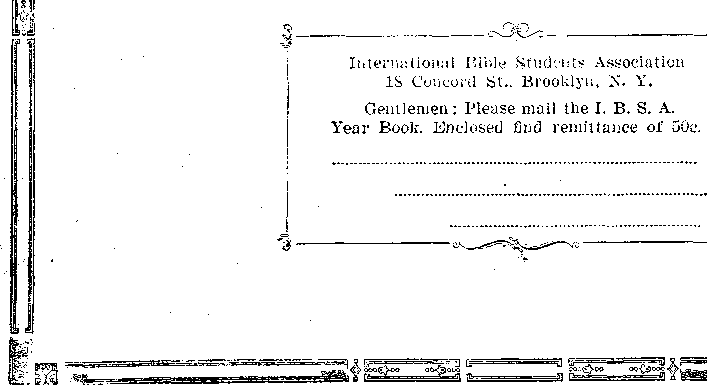

Social and Educational Philately—A Useful Hobby
i ■
Finance—Commerce—Transportation ' • Europe’s. Great Idle Plants
Political—Domestic and Foreign America 'to Pay Europe’s War Bills ’ . . . . . ..
Marshal Foch’s View of the Next War .......... 203 How Civilized Society Protects Itself . . .
Agriculture and Husbandry.. The American Cranberry
Travel and Miscellany
Jewish Possessions in Palestine (With map)...... .
What. Actually Happened at Miami Beach .
Religion and Philosophy
British Sunday Schools Fading Away
The Real Christian and the Hypocrite
Breaking Through Prison Walls in the North by Radio . . . 210
Little Studies for Little People
, studies 1N “The Harp of God”
Published every other Wednesday at 18 Concord Street, Brooklyn, N. Y„ u. S. A by WOODWORTH, HUDGINGS & MARTIN
Copartners and Proprietors Address: IS Concord Street. Brooklyn, N. Y., 17. S. A.
CLAYTON J. WOODWORTH . . . Editor ROBERT J. MARTIN . Business Manager
WM. F. HUDGINGS . . Sec’y and Treas. ■
Five Cents a Copy—$1.00 a Year Make Remittances to TUB GOLDEN AGE Notice to Subscribers: We do not, as a rule, send a card of acknowledgment for a renewal or for a new subscription. A renewal blank (carrying notice of expiration) will be sent with the journal one month before the subscription expires. Change of address, when requested, may be expected to appear on address label within one month.
Foreign Offices : British.....34 Craven Terrace. Lancaster Gate, London W. 2
Canadian , ........3.8-40 Irwin Avenue, Toronto, Ontario
Australasian....... 495 Collins Street, Melbourne, Australia
South African......6 Lelie Street, Cape Town, South Africa
Entered as second-class matter at Brooklyn, N. Y., under the Act of March 3, 1878
Volume VIII - Brooklyn, N. Y., Wednesday, December 29, 1926 Number 190
Philately —: A Useful Hobby
J
rpiIEBE are people in this world who think j -®- themselves superior persons and who affect to look down upon those who make collections of postage stamps, but the work of the philatelist is not in vain. He is a collector of history and of art, and sometimes on a large scale. Philate-
] ly also encourages the study of geography. '
• ' ’ A collection of stamps of all the countries in the world,-showing the stamps which are in use on the day this paper falls into the hands of our
1 subscribers, would give a very fair idea of the H progress which those countries have made to
date in the designing, engraving, Hthographing and printing industries. A similar collection
; made ten years ago would give a very fair idea l of the same items at that date, and the same \ would be true of a collection fifty years old. It ; would provide reliable history which in a few j instances could not be obtained so well elsewhere.
Governments usually pay much attention to ; their stamps. The stamps represent the govern-i ment and the people in a very special way. They go'out to the ends of the earth, to be seen, admired, collected and preserved. It is claimed that the most truthful likeness of Queen Victoria known to exist is on a Canadian revenue stamp.‘It is also claimed that the only known picture of Sydney, New South Wales, as it was in the early days, is found on an old postage • stamp. '
. Many artists are philatelists. They find that .the stamps which fall into their hands give them new and accurate ideas respecting styles and customs, buildings, historical characters, the
' formation of letters and figures, and the re-। suits which can be accomplished in engraving i: on tinted paper. The stamps of France are eon
. f fiidered masterpieces .in this latter respect.
J The word “philately’ comes from two Greek i words, philos, a friend or admirer, and atelei-a, i exemption from taxation. The first journal de, voted to the philatelic art appeared in Belgium in 1863, and the first public sale of stamps at auction occurred in London in March, 1872. Stamp dealers sell (for about 15 cents per 1,000) “hinges” for mounting stamps in albums securely, and yet in such a way that they can be quickly transferred to other places as desired.
Stamps of the United States
HE first stamps issued by the United States government appeared in 1847, since which
time an average of more than twenty-five new designs has appeared each year. Prior to 1847 the postmasters of . some cities issued their own stamps; and these now bring, in some instances, prices as high as $15,000 each. If the United States was slow in getting started in the printing of its own stamps, it has made up for this since; because it is claimed that the stamps now cancelled annually in American post offices would, if placed end to end, girdle the earth five times. '
With the World’s Columbian Exposition, held at Chicago in 1893, the United States began the execution of a series of historical designs which are unique, beautiful and valuable. The principal events in American history are thus made a matter of pictorial record and spread broadcast over the earth. The stamps issued in 1893, ranging in value from one cent to five dollars, showed Columbus’ portrait, his solicitation of aid from Isabella, Isabella pledging her jewels, Columbus’ flagship, his fleet, his first view of land, his mingling with the natives, his welcome at Barcelona, his. announcement of his discovery, his recall, his incarceration, his restoration to favor, etc. ,
One of the amusing things in this series is that on the one cent stamp Columbus is shown as sighting land, at which time he was smooth shaven, not a whisker in sight. On the two cent stamp, representing his landing, which supposedly took .place a few minutes after the scene
shown, on the one cent stamp, Columbus has a beautiful beard; but how he grew such a magnificent beard in so short a time is known only to the artists who made the portraits and the officials who approved the designs.
In 1898 this government recognized the TransMississippi and International Exposition, held at St. Louis, by featuring western items such as Marquette on the Mississippi, Indians hunting buffalo, the prairie schooner, a prospector, troops guarding a railroad train, Fremont on the Rocky Mountains, range cattle in a storm, the Mississippi River bridge, etc.
In 1901 came the Pan American Exposition at Buffalo, and with it the transportation stamps, steamers, railway trains, automobile, bridges, locks, etc. The Louisiana Purchase Exposition held at St. Louis in 1904, brought stamps of historical personages connected with the purchase. The Jamestown Exposition of 1907 brought pictures of early Virginia scenes, John Smith, Pocahontas, etc.
In 1909 the Hendrik Hudson celebration brought out a picture of the “Half Moon" and the “Clermont”, also a stamp commemorating the purchase of Alaska from Russia. The opening of the Panama Canal brought pictures of Balboa, the Panama Canal, the Golden Gate, and San Francisco Bay. The conclusion of the World War brought forth some victory stamps. The Pilgrim Tercentenary was the occasion for stamps illustrating the “Mayflower”, the Landing of the Pilgrims and the Signing of the Compact. In 1924 the Huguenot Tercentenary was similarly recognized and commemorated.
The stamps of 1925 and 1926 are appropriate to the Sesqui-Centennial recently held in Philadelphia, illustrating Washington at Cambridge, Washington taking command of the American .army, the birth of liberty, the battles of Lexington and Concord, the Liberty Bell, etc.
Interesting South American Stamps
1IREE of the most valuable stamps known in the world were issued by the little country
of British Guiana, South America. A pair of circular two cent stamps of British Guiana, bearing the Georgetown! postmark and the date of 1850, sold in London in 1921 for over $20,000. In order to get a similar pair Mr. J. J. Duveen, a New York stamp collector, sent a representative all the way to South America to obtain them.
A British Guiana one cent stamp of 1856, the only one known to be in existence, was recently purchased from the French government, by Arthur Hinds, of Utica, N. Y., for 1,075,000 francs, or about $35,000. The stamp was originally the property of Von Ferrary who, at the time of his death in Switzerland during the World War, had the most famous collection in the world. His mother before him was a famous collector of stamps.
Von Ferrary had plenty of money to gratify his hobby, and devoted his life to the collection of rare stamps. Believing it would be best cared for there he left the entire collection to the Berlin Postal Museum, but it was seized by the French government and is being broken up and sold. More than 50,000,000 francs has been real* ized from it to date. Philatelists will never forgive the French government for this act of vandalism. Von Ferrary was a quiet, shy, harmless old man who tried ail his life to keep out of the limelight into which his great collection constantly led him.
It is claimed that the best map of the Venezuela boundary dispute territory is to be found engraved on the Venezuela stamps for 1896. The Tacna-Arica plebiscite stamp is of great interest to philatelists, as is also the Chilean stamp of Robinson Crusoe’s island, Isla de Juan Fernandez. In the year 1922 Guatemala issued no less than thirty-five new designs of stamps.
Asiatic and African Stamps
MONG the Asiatic stamps printed in 1922, Armenia had forty-nine designs, Indo-China forty designs, the Far Eastern Republic thirty-six designs, and Turkey and Siberia each thirty-five designs. Iraq or Mesopotamia has the distinction of possessing a series off stamps designed by women. They portray native life and characteristics in an exceptionally artistic manner.
Among the African stamps printed in 1922 there were thirty-five Egyptian designs. A curious slip in the formation of a single Arabic character on one of these stamps caused the condemnation of 5,000,000 of them, doomed to be used up on official papers and thus eventually to be destroyed. The incorrect stamps bring a high premium.
Liberia has an interesting series of stamps commemorating the planting of the colony of free negroes from the United States by Jehudi
n* GOLDEN AGE
December 29, 1926
Ashmun, D. D., in the Summer of 1822. The colony was and is a success. The principal feature of the designs is the sailing ship in which the colony was brought, and the small boats putting off from it to land. Ashmun, a lover of his fellow men, remained in Liberia six years and planted there a strong colony of more than 1,200 persons. He was a graduate of the University of Vermont.
The Sudan British government pictures on one of its stamps Sir Slatin Pasha, author of “Fire and Sword in the Sudan”, making his escape from the Arabs on a camel.
The highest price ever paid for a stamp was paid by Arthur Hind, Utica, N. Y., textile manufacturer. He is reported to have paid $50,000 for an envelope mailed in 1847 in the African island of Mauritius, and bearing both the one and two penny values.
Europe—-The Philatelist’s Paradise ■
MONG the European stamps issued in 1922, Hungary had thirty-six designs, Ireland forty-two, Danzig forty-four, Italy sixty, Germany sixty-one, Russia sixty-two, Lithuania seventy and Austria seventy-four. Two years previous, before the boundaries of Europe were adjusted following the World War, there were 370 plebiscite stamps in use, in various parts of Europe.
Although the king of England is an enthusiastic philatelist, yet Britain and British possessions generally give scant attention to new and interesting designs. When a new sovereign comes to the throne his or her face is supposed to be of surpassing interest to all generations, until another one appears. Nevertheless, London is the recognized center of the philatelic art.
In 1923, at the International Stamp Exhibition in London, the United States government placed on exhibition a complete set of all the stamps issued up to that time in this country. Five hundred exhibitors had their collections at the exhibition. Their value was estimated at $5,000,000.
Although neither Britain nor any British possession has ever recognized Shakespeare on a stamp, yet Denmark shows on one of its stamps of 1920 a view of Kronborg Castle, which is the castle made famous as Elsinore Castle in Hamlet. Belgium has issued several flood stamps, the purpose of which is to raise fund's for the relief of flood victims.
Spain has issued (in 1905) ten large pictorial stamps, illustrating scenes from “Don Quixote”. Portugal has issued stamps in four designs honoring St. Anthony of Padua. On the back of each is printed a Latin prayer. Portugal has also honored her poet de Camoens, and Vasco da Gama, the explorer.
In 1899 Malta issued a stamp commemorating the landing of St. Paul on that island. Montenegro, in 1893, commemorated the four hundredth anniversary of the establishment of printing in that kingdom, now part of Yugoslavia.
Italy has celebrated the six hundredth anniversary of the death of Dante. Fiume, which d’Annunzio seized on behalf of Italy, had a stamp in 1920 bearing d’Annunzio’s likeness. Italy has announced that it will sell advertising privileges on its stamps, and hopes to make from $10,000,000 to $15,000,000 a year by this means.
Austria has issued stamps bearing portraits of Haydn, Mozart, Beethoven, Schubert, Bruckner, Strauss and Wolf. Poland has issued a stamp bearing the likeness of Paderewski. Bulgaria has commemorated a living poet, Ivan Vasoff, and a deceased friend of the nation, an English journalist, J. D. Bourchier. Roumania has honored the memory of her late beloved queen, Carmen Sylva, by several scenes, portraying her in various poses, writing, nursing a wounded soldier, spinning and weaving.
Europe’s Great Idle Plants
Felix Deutsch, general manager of the German General Electric Company, says of the
European industrial situation: “During the war and since the war, new factories were built in every land, while the old ones were enlarged, partly to meet the demands of war needs and partly in an effort to win economic independence from other lands. I estimate today’s industrial capacity at 40 to 50 percent above that of prewar. Against this there is a lower buying power. The result is extraordinarily sharp competition, precluding the possibilities of profit.” , "
The American Cranberry By Lily Haxworth Wallace
AMERICAN cranberries were originally found by the early Pilgrims in Massachusetts on the Cape Cod Peninsula. There they grew wild on the low marshes near the shore. The good housewives picked and preserved them as a delicacy. It is probable that the Pilgrims served cranberries with the wild turkey at Thanksgiving time, and in this manner the cranberry became closely associated with turkey and our Thanksgiving Dinner.
Cranberries have been cultivated approximately one hundred years, during which time the industry has undergone a steady improvement. It has developed rapidly in the last twenty years through improved methods of cultivation, marketing, grading and packing. Cooperation among the growers has also been a factor in this development which has changed some 25, 000 acres of waste, bog or marsh land into productive, valuable property. The maximum crop produced prior to 1907 was less than 400,000 barrels. The average crop of the last four years has been 600,000 barrels.
The cranberry grows on a vine which spreads over the ground. The runners attain a length of several feet. Uprights which bear the fruit reach a height of four to ten inches. They cover the ground closely and give a cranberry bog the appearance of a beautiful green meadow. Each upright may bear from one to seven berries. Cranberries mature quickly; the vines are usually in full bloom on July 4th, and the fruit is ready for harvesting early in September.
There are many varieties of cranberries which vary in shape, size, color, flavor and keeping quality. The predominating ones are Early Blacks, Howes, Jerseys, McFarlins, Bell and Cherry, Centennials and Champions. Early Blacks come on the market in September, and about the middle of October all varieties are usually ready.
The dictionary briefly defines the cranberry as ’’the scarlet berry of a plant growing in marshy land, or the plant itself.” But to those who have actually seen cranberries growing this seems an indifferent description; for the delicate 'stems with their small glossy leaves toning in color from the palest to the darkest green, with here and there dainty white starlike flowers with a deep red tongue, and the berries themselves also toning from pale green to yellow, rose and crimson, according to their maturity, make a picture of wondrous beauty.
The cultivation of this highly useful fruit is carried on principally in the Cape Cod district of Massachusetts, the southern part of New Jersey, and the northern part of Wisconsin, and the cranberry season runs from September first until April. That season is one reason for referring to the fruit as especially useful; for it comes into market just about the time that most fruits, with the exception of apples and the ’ practically year-round citrous varieties, are at an end, so that the housekeeper who for any reason has not been able to stock her store closet with jams and jellies for Winter use can ' still fill the empty glasses with quivering ruby cranberry sauce and cranberry jelly, ready for . consumption not only as an accompaniment to the turkey but with other meats as well—with pork in place of apple sauce, with roast beef or with chicken, as a spread for bread, as a filling for sandwiches, as a pleasing acid to offset some of the starchy dishes which we are apt to use in such great quantity during the Winter months.
HOHE cranberry contains a large percentage of A malic acid, which, being converted into alkaline carbonates in the blood, helps to purify the blood and also acts as a germ killer and disease preventive. It is because of this very quality that the cranberry is of especial value to those ’ having a tendency to eczema or other ills which are traceable to a lack of alkaline carbonates in the system.
There is something especially intriguing about a dish of rich cranberry jelly; the color, form, tang, all combine to provoke interest; and is it not fortunate that a food so good to look at, so simple to prepare, so inexpensive, should possess the added quality of being so good for us?
The following is the most reliable recipe for cranberry jelly:
COOK until soft the desired quantity of cranberries with one and one-half pints (three cups) of water for each two pounds (eight cups) of berries. Strain the juice through a jelly bag. Measure the juice and heat it to the boiling point. Add one cup (one-half pound) of sugar for every two cups of juice; stir until the sugar is dissolved; boil briskly for five minutes; skim and pour into glass tumblers, porcelain or crockery molds.
EEany Ways to Use Cranberries
BUT cranberry jelly is only one of the many ways of using cranberries; however housekeepers are beginning to appreciate them. 1 have already mentioned their value with meats. Here, however, is another thought in that same connection: 'When preparing a pot roast cook a cupful of cranberries right with it: their pleasing acid permeates the meat, serving two purposes, (a) they give a subtle.new flavor and (b), quite as important; they break up the tough muscles, making a less costly piece of meat just as tender as a high-priced one.
Cranberry Sauce
_ m ..Dmrry sauce is:
1 pound (4 crips} cranberries, g cups boiling water.
iy2 to 2 cups sugar (% to 1 pound).
Boil sugar and water together for five minutes: skim; add the cranberries and boil without stirring ' r ?d} until
all. the skins are broken. Tiemove from the fire When the popping stops.
1 served cranberry sauce with baked ham one night recently. At first the guests looked askance; it was something new, you know, something for which they were not prepared, but after once tasting the combination, they approved, and those housekeepers among the guests evidently noted the idea for future use in their own homes.
Did you ever use cranberry sauce or jelly as a cake filling? Use a plain sponge or cup cake and put the sauce, combined 'with whipped cream, between and on. top of the layers—of course, this must be for prompt service—a kind of glorified shortcake. Do not blend the cream and sauce until just before they are to be used and be generous in the quantity you use. Better have a reserve stock for the “seconds” which, are sure to be demanded I
Try cranberry sauce as a filling for an old-fashioned jam roly poly, either the baked or the steamed variety, serving hard sauce or additional cranberry sauce with the pudding.
It always seems a pity to discard the cranberry skins, as must be done when jelly is made, because they help to provide that most valuable roughage necessary in the diet. There is altogether too much elimination of roughage; we use too many refined and condensed foods which have been so carefully prepared that they have lost much of their vitality. If you do not like the feel of the skins, try the plan of passing the cranberries through the food chopper (using the coarse knife). They will cook very miielri more quickly, be full of juice, and the bulk of the skins will be there, even though not as apparent as when the berries are cooked whole. Perhaps this is only a way of beating the devil round a stump, but that is just what we housekeepers have to do at times in order to make our families eat with enjoyment the foods which we know are good for them.
~ J fiu -i By Henry Wilson
OKLAHOMA, is getting on the map. Js- The cause of this is its churches and public schools. The clergy are not satisfied with the grades the students have been making—or rather with their staying home from church to get their lessons—so they had a. meeting with the Superintendent of Schools and put into effect a wonderful plan, whereby all students who attend some Sunday School nine Sundays out of ten. are to be given credit of ton percent on their school grades. In that way they get credit of
ten percent in grammar, arithmetic, etc., without working! Just what we should expect—the preachers always believe in getting something for nothing. • ■ ;
The choir in the Christian Church of Pawnee now appears in white robes, in imitation of the Catholic ritual. Then once a week at that ehureh they are going to hold a circus for the school children, with witches, fortune tellers, etc. That, too, should help them tremendously in arithmetic—-and in godliness. Pawnee is progressive,
- /
Save the Babies By O. Erf (Ohio State University)
HAVE you had time to give the milk supply your best thought? Milk is the best food available for the development of your children and for your own health and comfort.
The relative value of foods as economical sources of protein is shown by the fact that milk at 15c a quart is equal in protein food value to beef at 34.9c a pound or eggs at 37c a dozen.
In addition to this, milk is of value because it supplies vitamins which promote growth and health and which are found in no other foods in the same form.
You should buy the best milk obtainable. It is cheapest in the end. Buy only raw milk, which is the form intended by nature for consumption.
Especially should expectant mothers, adolescent children and convalescents have only raw milk.
When milk is pasturized some of its value is lost. This may be replaced to some extent by fruit juices, but it is practically impossible to determine the correct proportions.
Raw milk from inspected herds comes from healthy cows, tuberculin tested; housed in clean, well aired, well lighted, comfortable stables; fed nourishing feeds that have grown upon well fertilized soil so that they contain all the elements of nutrition supplied by the soil, sun, air and moisture; milked by clean men or milking machines, into clean utensils; cooled immediately after milking; and delivered within eighteen hours.
To comply with the regulations of the Board of Health of the city of Columbus, raw milk must contain less than 30,000 bacteria per cubic centimeter, while pasteurized milk may contain 1,000,000 bacteria per cubic centimeter before pasteurization. By the application of heat 95% of the bacteria are supposed to be killed, so that 50,000 bacteria per cubic centimeter may remain, and the regulations still be complied with.
Pasteurized milk is collected from every imaginable source. Much of it comes from cows that have not been tested for tuberculosis. Even though the tubercular germs are supposed to be killed by the application of heat, would you not prefer milk which has never contained them? There is a question whether the application of sufficient heat to destroy the tubercular germs does not injure the flavor and digest!-
bility of milk. ■
Is it not better to keep milk clean than to permit it to become contaminated and then try to purify it ?
Such milk can never he so good as that which, has been kept clean. It requires more time and more expense to keep milk clean, but its additional value makes it worth more.
For drinking’ buy only raw milk from inspected herds whose owners are members of raw milk associations, which are organizations for the purpose of safeguarding the raw milk supply.
Buy only bottled milk.
Place milk in the refrigerator as soon as. delivered. Bacteria increase rapidly in milk which stands in the sun or is allowed to become warm.
Keep milk in the original container and in the refrigerator until the moment of serving.
Milk poured from the bottle should never be returned to it.
Keep the bottle covered at all times with a paper cap or an inverted tumbler. When outside, this prevents the entrance of flies or dust which may carry dangerous bacteria. When inside it prevents milk from absorbing odors.
Keep the refrigerator clean and sweet by means of proper drainage and frequent washing with hot water and sal soda.
"Wash the bottles as soon as empty, by rinsing first with lukewarm water and then with hot water.
Do not use the bottles for anything except milk.
Return the bottles promptly.
If there is any infectious disease in your home, do not return bottles except with permission of the Board of Health.
Remember that clean, raw milk, properly eared for, is the best food obtainable for promoting health, comfort and happiness, and that it is nourishing and economical.
British Sunday Schools Fading Away . .
BRITISH Sunday Schools are fading away, that the net loss is 1,775,073. Only 4,741,012
In the twenty years from 1906 to 1926 the Sunday scholars now remain. Oddly enough the Episcopalians lost 942,087 from their Sunday church membership has increased slightly durSchools, and the Free Churches lost 832,986, so ing that period. .
. 200
Child Modernists, el. al.
mHB writer is sometimes engaged in the work of preaching the gospel in Canada, under the auspices of the Watch Tower Bible & Tract Society. Being- informed that The Golden Age has assumed some responsibility in the matter of giving timely hints concerning the entertainment of such speakers during their visits, I trust that you will not therefore think it amiss if I make the following suggestions: .
(1) That 1 be allowed a room with a family that has not more than sixteen small children.
(2) That said children be taught a few items of civilization according to the lines laid down in the Bible, before the speaker arrives.
(3) That the following antics on the part of said children be reduced to a minimum, to wit: waking up before daybreak, singing songs, yelling, squealing, jumping over the furniture, performing somersaults, and doing other acrobatic stunts throughout the house while the adult portion of the family is trying to sleep.
(4) That children be instructed by their parents that it is unseemly for them to mount up into one’s lap when not invited to do so. Inheriting, as I do, certain traits from my cannibalistic ancestors, I experience a strong tendency to eat up any child who so comports himself; hence I issue this timely warning.
(5) That I deem it uncultured for a juvenile anarchist to climb upon the piano stool and drum on the instrument while I am trying to talk to adults on serious religious subjects; and that under these conditions there is a possibility of my losing my equilibrium, hitting the child’s manners with a verbal club, and treating the mother to some ironical observations on the subject of child training.
(6) That I object to a number of persons being entertained by a child in a room where a religious meeting is going on; and that such doings, if persisted in, may result in my becoming an inmate of a public institution for the non compos mentis, thus causing me to become a ourden on the community.
(7) That it grates on my nerves to hear a small boy call his mother a fool, even when he is telling the truth. Veracity is not always to be pointedly and audibly indulged in. There is a time for all things. When the boy grows older he may look back upon his precocious perspicacity and regret that he expressed his views so
By W. Sargent
ingenuously and at a time when his mother was incapable of defending herself. "Ladies first” should be a point of etiquette with boys as well as men; ■ and if only they could be brought to see this it might give greater dignity to the maternal portion of earth’s inhabitants.
“Boys will be boys” is still a maxim, but much of its force has been impaired by the conditions of the times. These modern days have produced a certain kind of boy that is not a boy according to any previously accepted standards. On the contrary, the boy of this type is a heterogeneous aggregation of revolutionary and ungovernable proclivities, so disorderly as to make a timber wolf seem tame and innocuous in comparison.
Of course there are boys of another kind, well-trained boys; and when I find one I take off my hat to him and to his parents, for they deserve it. I rejoice in such a boy; for he is a prince among his fellows. Of course he delights in the boyish games of coasting, skating, ball playing and all other healthful sports. He is a normal, jolly boy, full of dynamic force and ready for anything in season; but he is also kind, thoughtful, considerate of others, unobtrusive, obedient to parents, and seems always to know his place in the presence of his elders. ■
One day I saw a healthy, strapping boy of this sort gladly assist a feeble old gentleman with his grips from a steamboat to a landing, and thence some little distance further to a railway station. When the old gentleman proffered him a coin the boy, touching his cap, said, “No, thank you, sir; I didn’t do it for money.” And he didn’t; he did it as a pure native expression of princely qualities which had been instilled into his impressionable mind by godly parents. That is what I call a real boy, one to be proud of.
On another occasion I was carrying some handbills, when a gust of wind blew several of them along the street. A small boy chased them, caught them, dusted them with his handkerchief, and returned them to me. I could see a fine, happy expression in his face. I bowed, smiled, and said, “I thank you, my young man.” He lifted his hat, bowed, returned the smile and replied, “You’re quite welcome, sir.” When such a boy as this comes around I always want to shake hands with him and say, “God bless you”; for he is the embryo of a real man, and soma day the world will rejoice in him.
Jewish Possessions, in Palestine
MANY of our readers will be interested in the .■accompanying map of Jewish possessions in Palestine, which shows the location of 189,360 dunams (quarter-acres) of land now held by Jewish colonists. This land is in forty-six loca-
tions, much of it being in the valley of JezreeL Concerning the work done in this valley since' the land came into possession of the Jews, a little booklet published by the Jewish National Fund says:
During the last four or five
years the
Fund has
the swamps of the valley of
making an outlet to the sea. More n 20.000 have been dried out in this fashion. Drainage and water supply pipes have been installed to a length of fifty-four kilometers; also 2.5 kilometers of beton canals. Many advantages have been derived from this work:
neighborhood of the area have been made
While swamps were deadly, now they are made healthful. In-
j stead of abandoned Arab and | even German villages, new Jew' ish settlements are growing up,' : safe from malaria. .
: 2. New tracts of land have
i been added which are the best in the country.
| 3. The water which once caused
i swamps now forms springs which are used for drinking and for systematic irrigation of the fields and plantations.
Only those who have visited ■ the valley are able to estimate the achievement of the National Fund. The curse of the country has been transformed in a short time into an eternal blessing by the power of the Jewish pioneers.
The same little book says that the present Jewish, population of the world is 15,000,000 divided as follows: United States, 4,000,000; Poland, 3,000,000; Soviet Russia, 2,580,000; Roumania, 1,700,000; Germany and Hungary,
England, Austria and
Czecho-Slovakia, each over 300,000; France, Lithuania, Argentine, Canada, Morocco, Soviet Asia and Palestine, each over 150,000; Holland, Greece, Latvia and Mesopotamia, each over 100,000; Belgium, Italy, Jugoslavia, European Turkey, Asiatic Turkey, Persia, Algiers, Tunis, Egypt and South Africa, each over 50,000; Bulgaria, Syria, Arabia and Abyssinia, over 25,000; Switzerland, Brazil, English India, China, Afghanistan, Tripoli and Australia, over 20,000.
America to Fay Europe’s War Bills
THAT in the end America can confidently calculate on losing most or all of the money she has put into paying Europe's war bills is the opinion of Frank H. Simonds, publicist. In an article copyrighted by the McClure Newspaper Syndicate, which appeared in the Boston Sunday Herald and other newspapers, Mr. Simonds said in part:
The discussion of the justice of our policy can hardly have any importance now, because it is thoroughly established that Europe will never recognize that justice. Much less is there any use in maintaining that we have been generous, at. a moment when Uncle Sam has become Uncle Shylock for a whole continent. The moment has arrived when we must face with absolute clarity the essential fact that Europe believes we are insisting upon payments which are not fair and pursuing toward a continent which is stricken the most selfish and grasping policy in human history.
Now the end of all the present dispute is perfectly patent. We are going to lose the money we lent to Europe during the war, save for some relatively small sums which may be paid during a short time and solely because such payments are a detail in getting more money from us in the shape of commercial loans and credits. And these incidental payments will have the same result as pouring kerosene upon a fire.
Washington has steadily maintained that the resentment discoverable in Europe was transient and that prosperity would come quickly and then the debt payments would become so insignificant that they would cease to be an issue. By contrast, for three years at least, the fever of European resentment has been growing and it is very far from having reached the possible maximum yet, while it is clear that there has been no such recovery of prosperity as was cheerfully predicted in the American capital.
Cancellation of the debts en bloc now would not change the European estimate of our spirit. Such an act would merely be interpreted as an eleventh-hour discovery that we could not collect and that the attempt to collect threatened to be unprofitable. We are going to be Uncle Shylock in Europe now until the present generation has disappeared. The mere official declaration that we have been generous arouses a storm of passionate resentment from Moscow to London and a flood of contemptuous recrimination.
The nation which really has us at its mercy is the British, because it is paying and is immune from any American criticism; and it is therefore in the perfect position to rally the whole European continent against us. We are making the British pay through the nose. They are paying, but they are also giving the whole continent the lead in what is becoming a continent-wide campaign against the United States.
In any event, one must perceive that the whole problem is changing and widening. France is on the edge of a collapse which has many points of resemblance with that which preceded the French revolution. Europe is in a condition of unrest and unstable equilibrium which make any explosion in any considerable country almost sure to have grave repercussions elsewhere.
Marshal Foch’s View of the Next War
IN AN interview with an eminent Swiss newspaper correspondent, Marshal Foch, Generalissimo in the World War, is quoted as saying:
I should say by the amplitude of present "preparations, that the next struggle is apt to be much swifter, much more severe, than the last, much, more terrible to the civil populations. There will not be time to construct defensive weapons after the war begins.
In the field each infantryman will carry a light machine gun as he carried his rifle in the last war. From the barrage of a single machine gun, carried and operated by a single infantryman, not even the birds of the . air will escape at short range.
I think cavalry will be employed as more mobile even than light motor cars. Tanks operated by individual combatants; tanks carrying from fifty to one hundred soldiers each; other tanks able to ford rivers and climb hills, and carrying as much as from twenty-five to fifty tons of munitions, will be used.
Skies will be darkened by a fleet of from one hundred to one thousand aeroplanes, some dropping poison gases, others covering the skies with black clouds, and still other discharging bombs and machine guns on the enemy.
Fighting torpedoes will be operated electrically from headquarters, hundreds of miles away f rom the actual battle area; aeroplanes and huge balloons, with a capacity to carry tons of engines of destruction over the enemy, will also be operated from a distant source; various “wave lengths” will be let loose throughout the atmosphere.
Within a very short time the radio energy will be so controlled that a combatant nation’s battle forces will “charge” the very air of the enemy country.
It would be an easy matter for one nation to destroy another quickly if the attacking nation alone had such devices. But as nearly every nation will,., on the outbreak of the mighty struggle, bring out secret devices of its own, the struggle may be’longer. When the next war is ended, much of our world will find itself crippled physically, financially and morally.
How Civilized Society Protects Itself
TJ OW civilized society protects itself is suffi-ciently told in the following dispatch, which is here published just as sent out recently by the Associated Press. Attention is called particularly to the last paragraph, which shows the high plane upon which civilized society now lives:
BOSTON. (A. P.).—Jesse Harding Pomeroy, state prison’s oldest “lifer,” today rounded out 50 years behind the bars, 41 of them a span of “living death” in solitary confinement. Sixty-five years old and still hopeful of ultimate freedom, Pomeroy is believed to. have set a record for prison endurance.
The prison doors closed behind him in 1876 as'-a 15-year-old boy. Convicted of first degree murder and sentenced to be hanged, his extreme youth won commutation to life imprisonment and solitary confinement.
In such a state he grew through young manhood to middle age, and nine years ago came into the comparative freedom of the prison building, an old man. Annually his mother carried her fight for a pardon to the governor. Annually her request was refused, and since her death Pomeroy has continued the unsuccessful fight alone.
Prison authorities have never allowed him to be interviewed, but a friend visiting him recently gained two facts: That he is opposed to capital punishment as a breeder of crime, and that he saved money and contributed to the World War Liberty Loans.
“'After every capital punishment case another seriou? crime is committed,” said Pomeroy.
“Society imprisoned Pomeroy because he killed,” he told his friend, “but accepted his money to make it possible for others to kill.”
Buying Stocks on Margin By Joseph Greig
TUTUCH of the mystery and razzle-dazzle of getting rich by “dealing in stocks” will surely lose its spell over the get-rich devotee, as soon as stock brokers’ methods are exposed by the sharp eye of the Real Owner of heaven and earth. And even now a caustic slant is had in the following answer to a subscriber of the New York Wall Street Iconoclast.
On every margin transaction there is a printed slip whereby you swear away the rights the law aims to give you for your protection. You give the broker the right to hypothecate your supposed 100 shares of Muck Trucks with the bank, or with anybody else, for any loan amount whatever, and the broker may mix your stock and any other stock or collateral in any of his borrowings.
When the broker fails, your account is among the “general assets” which the bankers and other creditors take over. You OWN nothing. Moreover, the broker’s printed slip, which serves as a contract with you, gives the broker the right to call on you to put up more margin and even to take up and pay for your stock IN FULL at any time, in HIS judgment, or for any reason that SUITS HIM, or for no reason at all, or you will be sold out.
Over 90 percent of “investors” in stocks on margin do not know these little “tricks” of the game in which they sit, and where, even if they knew the rules of the game, the game would be unbeatable, what with the cards being marked and stacked by the inside, and then dealt from under the table. Of course, when you buy any property on a 50 percent mortgage, you really see the property, you DO own it and occupy and use it, and your mortgage falls due on certain dates, and your interest payments are FIXED as to date and amount.
In “investing” in securities on margin you do not see any property, you do not want to take up the property, you can' be called on for more margin at any time for any reason or no reason, or even be compelled to take up your stock and pay for it IN FULL without warning, or be sold out, and your loss is UNLIMITED, not at all limited to the stake you “invest.” If the broker theoretically loses in selling you out, YOU are liable under the law for HIS LOSS, besides having lost the whole stake you put up.
The Real Christian and the Hypocrite [Radiocast from Watchtower WBB'R on a wave length of 416.4 meters, by R. H. Barber.]
A CHRISTIAN is a follower of Christ, one who believes and practises the teachings of Christ. A Mohammedan is a follower of Mohammed; a Lutheran is a follower of Luther; a Wesleyan is a follower of Wesley; and a Christian is always a follower of Christ.
It is self-evident that there could be no Mohammedans before Mohammed’s day, neither could there be Lutherans before Luthers day,, nor Wesleyans before Wesley’s day; and it should be self-evident that there could be no Christians before Christ came into the world.
To be a follower of Christ, one must live after Christ’s time. This means that there was not a Christian on earth for the first 4128 years of the history of man, from Adam’s time until Jesus’ time. Luke tells us, in Acts 11:26, that the followers of Jesus were first styled Christians in Antioch.
Long before Jesus came to earth, there were many persons among the Jewish nation who worshiped the true and only God, whose name is Jehovah; but they were not Christians, because not followers of Christ. Even so today there are millions of Jews who worship Jehovah God, and yet repudiate Jesus Christ and are therefore not Christians. Jesus Himself worshiped God, but it would be entirely improper to call Jesus a Christian, because a Christian is a follower of Chfist.
Many Professed Christians are Hypocrites
THERE are many professing Christians on earth today who deny the teachings of Jesus, and refuse either to practise or to teach them. All such are hypocrites, for a hypocrite is one who claims to be a follower of Jesus and yet either minimizes, belittles or repudiates the teachings of Jesus Christ. If such a person would honestly announce himself as an infidel or a heathen he would not be a hypocrite. An infidel is not a hypocrite.
All of the denunciations of our Lord were leveled at the hypocrites of His day. According to the Bible the worst crime in the list of crimes is that of hypocrisy; that is, claiming to be a Christian yet denying or belittling the teachings of Christ. Hear the Master’s repeated denun-. ciation of this class: “Woe unto you, scribes and Pharisees, hypocrites.” The apostle speaks of such as having the form of godliness but denying the power thereof. .
Let me repeat the definition of Christian. A Christian is one who believes that Jesus is the Son of God, and also believes the teachings of Jesus, and to the extent of his ability practises and preaches the same. Neither evolutionists nor modernists can in any sense of the word properly claim to be Christians for the reason that they deny that Jesus is the Son of God, deny that He is the Messiah, deny His virgin birth, all of which is repeatedly and emphatically taught in the Word of Truth by Jesus Himself.
Jesus also taught that He gave His life a ransom for all. The evolutionists and the modernists deny that there was any necessity for such a ransom. Jesus taught that, as a result of His death as a ransom price, all that are in the graves shall hear His voice and come forth; but the evolutionists and the modernists deny that there is anyone in the grave; they claim that the dead are more alive than ever, either in heaven or in hell; in fact they deny every fundamental teaching of our Lord.
What is a Hypocrite
IN VIEW of these well-known facts, it is not only absurd for evolutionists and modernists to call themselves Christians, but it is the height of impertinence and presumption. By claiming to be Christians, and yet denying the teachings of Jesus, they are sailing under false colors, and place themselves squarely in the class which Jesus called hypocrites.
Their mistake consists in thinking more highly of themselves than they ought to; they are wise in their own conceits.
As a proof of their conceit we often hear them say, when cornered with some Scripture text: “I am a graduate of such and such a college, and have taken a four years’ course in a theological seminary.” They seem to forget that the early disciples of Jesus were ignorant and unlearned men; that the wisdom of this world is foolishness with God; that not many great, wise or noble would be called; and that the world by wisdom knew not God.
People, quite generally, think that a hypocrite is either a drunkard, a thief, a murderer, a
liar or an adulterer; but a man who is merely a slave to his appetite or passion is not a hypocrite. He is but a member of the fallen race; and the fallen tendencies, bequeathed to him by heredity from his ancestors, have gained control ; he is their slave. Such deserve our pity and sympathy and help. But no honest man could sympathize with a hypocrite, for a hypo- • crite is the embodiment of selfishness and'dishonesty. ■
Try to think of a man professing to be your best friend, yet for some personal advantage lies about you and slanders you behind your, back. That man is a hypocrite. Think of him belittling you and ridiculing you behind your back, and doing other things which make your friends lose respect for you and all confidence in you. - You would not consider such a man your- friend in any sense of the word. While claiming to be your friend he is in reality your worst enemy. No excuse could.be offered for such a course, and he would be deserving of the severest -censure and condenmnation. A man. ’might be a drunkard and yet be unselfish, honest and good-hearted. But hypocrisy springs from an evil, wicked and malicious heart. No man was ever a hypocrite by heredity.
Jesus Despises Hypocrites
READ the twenty-third chapter of Matthew ' and note carefully our Lord’s arraignment of the hypocrites of His day, and you will get a better idea of what a hypocrite is than in any other way. Jesus said, “All their works they do to be seen of men.” “They make broad their phylacteries and enlarge the border of their garments, they love the uppermost rooms at the feasts, and the chief scats in the synagogues, and greetings in the markets, and to be called Rabbi ”
In other words, they desired to be in the limelight at all times; they loved the plaudits of men; they, played to the galleries at all times; they made long prayers on the street corners to be/seen of men. They were not serving the Lord, but were serving themselves—their own selfish ambitions. They were using their religion to gain the praises and honor of men for themselves. They cared nothing for the Lord nor for His Word nor His name. They were pious, sanctimonious frands—hypocrites—and in scathing words Jesus denounced them as, such.
Hear Jesus’ words in Matthew 23:25-28: “Woe unto you, scribes and Pharisees, hypocrites ! for ye make clean the outside of the cup and the platter, but within ye are full of .extortion and excess. Thou blind Pharisee, cleanse first that which is within the cup and platter, that the . outside may be clean also. Woe unto • you, scribes and Pharisees, hypocrites! for ye are like unto whited sepulchers, which indeed appear beautiful outward, but within- are full of dead men’s bones and all uncleanness. Even so -ye, also, outwardly appear righteous unto men,/ but within ye are f ull of hypocrisy and iniquity.”
Be it noted also that this same class of men. whom Jesus denounced so scathingly were highly esteemed by men. Men admired their piety, their sanctimoniousness, their wisdom and their devotion; and yet Jesus called them the most wicked class of men .on the earth in His time.
■ Why these two different.estimates of the same class? The answer is that the common people had been taught that pomp and ceremonies, vestments and rites, piety and sanctimoniousness, constituted real religion ; but Jesus knew that these things were only the cloak behind which hypocrisy hid itself. Jesus knew that these things were man-made and not ordained of God, and therefore did not have God’s approval. The scribes and Pharisees knew the same thing, yet used these things to impose upon the credulity and ignorance of the common people.
The Modem Hypocrites ■
HESE Pharisaical hypocrites of Jesus’ day have their counterpart in our day. The clergy class have succeeded in separating themselves from the “laity”, and have made the people believe that this separation is approved of God.
The clergy love to have prominence, not only in religious matters but in secular affairs. They love to be called Reverend, Father, and D. D. They love to wear a peculiar garb—long skirts, vestments, peculiar collars—as a sort of badge, marking them as a separate and distinctive class from the common people. They love pomp, ?■ ceremony and ritualism. They delight in magnificent church edifices, tall steeples, expensive pipe organs and large financial reports.
The sermons of the clergy of today deal with such subjects as prohibition, moral and social reforms, corruption in politics and in other high.
places; and seldom do they mention the ransom work of the Lord Jesus, or the kingdom of Christ, the resurrection of the dead or “the restitution of all things, spoken by the mouth of all the holy prophets since the world began”.— Acts 3:19-21.
Rather they take much time to deny the virgin birth of Jesus, which is clearly taught in the Bible. They spend much time trying- to prove the theory of evolution, a thing which is not mentioned nor even hinted at in the Scriptures. They devote much time trying to prove the theory of eternal torment, and thus prove that God is a fiend and devoid of love in the face of the plain Scriptural statement that “the dead know not anything”.—Ecclesiastes 9: 5.
But more than all this, the clergy have taught the common people, who look to them as their teachers and guides, to believe that their titles, peculiar garb, ceremonies, magnificent buildings and lectures on reforms are the things that constitute true religion; and that one who is engaged in doing these things, or in some way supporting them, is a real Christian. The truth is that these things are but the camouflage behind which the real hypocrite hides himself. Professing to be followers of Jesus, they deny the doctrines which Jesus taught, and engage in a work in which Jesus never participated.
Jesus Was No Hypocrite
ESHS never taught the doctrine of eternal torment ; He never allowed the people to address Him as “Your holiness”, “Reverend,” “Doctor,” or any other title. He wore no peculiar garb, designed to mark Him as a being above the average man. He did not beg money to build expensive churches or organs; he did not indulge in ritualism or ceremonies; nor did he deliver any lectures on prohibition, moral or social reforms, on the latest scandal or murder ; and neither did He take any part in any of the political affairs of His day, nor did He ever, in a single instance, urge the young men of His day to engage in war. The majority of the clergy do all of these things, and many more which we might name, which Jesus never did. How, then, can they honestly claim to be followers of Jesus? They cannot; the very claim itself is an act of hypocrisy.
We are glad to say, however, that there are some clergymen who are not hypocrites; there are some who love the Lord, and are trying to the best of their knowledge and ability to preach the gospel of Jesus Christ. They deplore the conditions that exist in religious circles today. They are not in sympathy with the theories of evolution and modernism, or any effort to discredit the teachings of the Bible or to ridicule the claim of Jesus that He is the Son of1 God. There are still a fewT such clergymen; but they are regarded as old fogies, out of date, back numbers.
What is a True Christian?
OW let us examine what the Scriptures have to say about a real Christian. How-does one become & real Christian? Before investigating this subject I call your attention to the fact that in becoming a Christian one does not have to join any one of the denominational churches; Jesus was not a member of any of them, nor did He advise anyone to join them.
In fact, not one of the denominations of our day was in existence when Jesus was on earth, nor for a number of centuries thereafter. They are purely man-made inventions, and instead of uniting the Lord’s people in one flock they serve the purpose of dividing them into over two hundred flocks;.and they set up barriers, called creeds, which hinder Christians from getting together.
Ail real Christians Jesus acknowledges as His brethren, as St. Paul informs us in Hebrews 2:11: “Both he that sanctifieth and they who are sanctified are all one, for which cause he is not ashamed to call them brethren.” In Luke 8: 21, Jesus said: “My brethren are those who hear the word of God and do it.” In these words we have a description of a real Christian— “those who hear the Word of God and do it.”
Those who deny the Word of God are not Christians, neither are those who add to the doctrines and teachings of the Word things that are not written therein; neither are they Christians who refuse to do the things written in the Word. “Those who hear the Word of God and do it”—that is a very simple statement, and yet it comprehends all that is necessary to become a Christian.
Jesus said: “God so loved the world that he gave his only begotten Son, that whosoever believeth on him might not perish, but have everlasting life.” What do these texts teach us?
They teach most emphatically that it is necessary to hear, that is, understand, the Word of God; and further, that it is necessary to believe that Word; and still further, that it is necessary to obey it. To be a Christian one must do all these things.
OW let us trace the steps by which a sinner may become a genuine Christian. (1) He must repent of his sins, which means that he becomes disgusted with the course of sin which he has been following, and has an honest desire to change his course. This does not make him a Christian, however; he might become sick and tired of sin, and yet not change his course of action.
. Repentance simply means a change of mind, but far more than this is necessary in order to become a Christian. (2) The next step is called conversion, which means a change of the course of action—a right-about-face as regards his conduct. Conversion means that the drunkard will stop drinking, that the liar will stop lying, and the thief will stop stealing. But this step does not make any one of them a Christian; a man might stop drinking, lying, stealing, or following a course of immorality, for purely selfish purposes—that he might have the esteem of men or amass a larger bank account, or because of fear of being arrested and put into jail.
It must be remembered that there are thousands of good, noble men and women who do not drink, lie, steal, swear or live immoral lives; and yet who never even profess to be Christians. Notable, among these was the great infidel, Col. Robt. G. Ingersoll.
Purity, however is the only “Christian” standard set before the people by the average clergymen, evangelist or Sunday School teacher. They claim that if a sinner reforms and ceases to do grossly sinful things he is a Christian and has a sure passport to heaven. This false claim has done much harm, by lulling the people to sleep and making them think that they have done all that is necessary when they have merely stopped doing these tilings. What further step is necessary?
Christians Must Stand for the Truth
IF A MAN is honest in his desire to become a Christian, he will go to the Word of Truth to find out what is God’s will concerning him.
Jesus said: “Ye shall know the truth, and the truth shall make you free”; and again He said: “Sanctify them through thy truth, thy word is truth.” The Apostle Paul said: “Study to show thyself approved unto God, a workman that needeth not to be ashamed, rightly dividing the word of truth.” Jesus said again: “My brethren are those who know the will of God and do it.”
It is necessary to study the Bible in order to get the true doctrines—the truth. Many people think that doctrines are unnecessary. We often hear clergymen and others say: “It makes no difference what you believe, if you only live right.” This is a great mistake. It is absolutely necessary to know The TRUTH—to know the true doctrines of the Scriptures if you would be a Christian.
Doctrines mean teachings, and if we do not have correct doctrines we might be guilty of following the course of the hypocrites of Jesus’ day and of our day, viz., teaching for doctrines the commandments of men; or we might be believing and teaching the doctrines of devils, of which St. Paul speaks in 1 Timothy 4:1. Many doctrines which are taught today by professing Christians are really the commandments of men or the doctrines of devils. They misrepresent both the Bible and the heavenly Father.
Note a few of the texts that emphasize doctrines : In Matthew 22:33, the people were astonished at Jesus’ doctrine. In John 7:16, Jesus said: “My doctrine is not my own, but his that sent me.” The apostle, in 1 Timothy 1:3, exhorts Christian leaders that they teach no other doctrines; and in Romans 16:17 he urges the saints to hold fast the form of doctrine which was delivered unto them. Likewise John says, in 2 John 9: “Whosoever transgresseth and abideth not in the doctrine of Christ hath not God.” A great many other texts emphasize the importance of true doctrine.
It makes a vast difference whether we believe the truth about God or whether we believe a lie about Him. When the Apostle said, “Whosoever believeth on the Lord Jesus Christ shall be saved,” he meant that it was necessary to believe the doctrines which Jesus taught, and not simply to believe the historical fact that such a person as Jesus lived and died. Faith in the Lord means to have faith in the doctrines which He taught. No man can possibly be a Christian without believing the truth.
IJT merely believing the truth does not make a man a Christian. He might repent, be converted, he might study the truth and believe the truth, and still not be a Christian; the apostle speaks of some who hold the truth in unrighteousness. (Romans 1:18) Again, in Romans 2:8, he speaks of some who obey not the truth, and in 2 Timothy 3: 8 he refers to others who resist the truth.
The honest, earnest seeker after truth will find that God is not trying to convert the world in this age, but that He is selecting or electing a class composed of 144,000, to be associated with Christ in the work of converting the world during the reign of Christ, which is now beginning.
He will find that this class are the ones who are following in Jesus’ footsteps, and that no others are doing so. He will find that this class are required to 'present their bodies a living sacrifice’. (Romans 12:1) He will find that Jesus did this same thing. He will find that when he makes such a presentation God accepts him as a member of the body of Christ, which is the true church. (Ephesians 1:22,23) At the same time Jesus accepts such an one as His brother, and thus he becomes a Christian, a real Christian. But it still remains for him to be faithful to his covenant. He must keep on being a real Christian until death.
AVING become a Christian, having become, a follower of the Lord, and having had the
truth committed to him as a sacred trust, the Christian now has a responsibility toward they truth if he wishes to remain a Christian. Let us! note what that responsibility is. Says Paul, in 2 Timothy 4: 2, “Preach the word.” Says Jesus, in Matthew 5:16, “Let your light shine before men.” Light means the truth, and this text means preach the truth and do not let your light be hidden under a bushel. The Apostle Peter tells us that Christians should show forth the praises of Him who has called us out of darkness into His marvelous light.
No man can remain a Christian and not preach the truth. It is quite generally supposed that a man must have a course in college, and an additional theological course, and human ordination, in order to be a preacher. This is only some more hypocrisy, sham, fraud. No scripture supports that idea. It is another man-made invention. But every Christian must put on the whole armor of God, which includes the sword of the spirit, which is the Word of God. All true Christians $re preachers of truth, but not all preachers are true Christians.
What Actually Happened at Miami Beach
THOSE who are accustomed to believing everything they read in the newspapers, and who can recall what the newspapers had to say about the effect of the great storm upon Miami Beach, will read with interest the following from the manager of the principal real estate development in that district:
. The reports of our recent storm, printed throughout the north exaggerated actual conditions greatly!
For instance, hundreds were reported killed at Miami Beach. There were three deaths of Miami Beach residents.
Reports also stated that practically every Miami Beach home was demolished. In a careful inspection from 10th street to the north end of Miami Beach I found not over three percent of the homes so badly damaged that they cannot quickly be repaired. On Star Island, where over a million dollars had been spent in homes, the total damage will not exceed $5,000.
The chief property damage consisted in tiling blowing off roofs and rain damage caused by awnings breaking holes in windows.
Possibly one tree out of every six or eight is badly bent or down, many of which can be raised satisfactorily. This summer we cut down 1,900 trees at Miami Beach at a cost of over $10 per tree. Last summer we cut down 15,000 trees and had planned to cut down 10,000 more this winter. We felt there were too many trees here. .
There is no shortage of food or water. Neither is there any epidemic. Stores are all open and no raise in prices. •
Our Flamingo, Nautilus, Lincoln, King Cole and Boulevard hotels are not badly damaged and will all be open on schedule for the winter season.
Breaking Through Prison Walls in
YES, it is a good and timely work to do something in behalf of prisoners by radio. But, you ask, what particular prisoners are these in whose behalf a radio campaign is being inaugurated? No, they are not the prisoners languishing behind lofty, unsealable walls and wearing the striped or otherwise odiously marked garb of a felon. -
Readers of The Goldest Age will recall an article that appeared in this magazine some time ago, a radiocast lecture by Judge J. F. Rutherford from Radio Station WBBR, entitled: “'A Message to the Prisoners.” In this address the Judge pointed out that there is a great host of religious prisoners, namely, devout men and women who are in mental bondage.
These prisoners long for religious freedom, hunger for proper spiritual rations, yearn for freedom of spiritual activitybut are bound up in the great denominational systems, Catholic and Protestant. They are forcibly detained there, not by literal iron bars or by ball and chain, but by the prison wardens and keepers, the clergymen, who inspire fear in their hearts and who use other- means of intimidation to keep their prisoners bound to them and to their systems, threatening them variously if they show an inclination to break bonds for true religious liberty, the liberty wherewith Christ Jesus makes free.
PARTICULARLY during the past half century, and more so since 1918 A. D., have these clergy gaolers diligently sought to hold their really spiritual members in their churches, fiercely fighting against the inroads of ’'■'the present truth”, which is intended to deliver the prisoners from bondage to men and to manmade church organizations. These poor, bewildered and oppressed people have been solemnly warned against attending meetings where Bible truth, pure from human creeds and philosophies, is taught.
The clergy have frightened them against reading literature bearing the glad tidings of the Lord’s second presence and the establishment of His glorious kingdom in the earth. They have been terrorized by suggestions of punishment in hell-fire and brimstone if they forsake the church systems. Their fear, or superstitious regard and undue reverence to these the North by Radio By F. W. Frans sanctimonious “men of the cloth”, have been a snare; and now they are caught in the tightening noose.
But the prisoners are now beginning to wake up to their condition, as Samson once did to his. They are more and more clearly seeing the religious hypocrisy of the clergy of all denominations ; they wonder what this world is coining to, particularly the churches, and who will maintain God’s Word, the Bible.
“Where shall we go?” is their fearsome question. Afraid that they would be forsaking the true church of Christ, they feel they cannot conscientiously abandon their churches. To them, that would be like Samson pulling down the pillars of the Philistine banquet-house. Their groans and sighs (Psalm 79:11) are come up to the God of their salvation, Jehovah.
Addressing the International Bible Students Convention in the Hygeia Auditorium, Toronto, Ontario, on Monday morning, November 8th, Judge Rutherford told his audience that the radio is the best practical means of getting the message of freedom to these prisoners. The preachers assiduously try to keep their prisoners from getting “the truth”; but the ’radio waves go right through the walls of the prisons, and the preacher and priest prison-keepers cannot prevent them from tuning in and hearing the message in the privacy of their own homes.
The Judge pointed out that the correspondence received by the radio stations owmed and operated by the International Bible Students Association, in Canada and the United States, confirms this. By means of the radio the aforementioned prisoners become acquainted with the kingdom message without clergy interference, and oh, how g( od it sounds to them! Then they either write in for literature, or some time later when a colporteur with the printed message calls upon them they identify the message and promptly say: “I want those books.”
THERE was a double purpose in Judge Rutherford’s visit to Toronto during the Thanksgiving season of Canada. He went (a) to attend the I. B. S. A. Convention there, and (b) to serve at the official opening of Canada’s new radio station, CKCX. On arrival in Toronto, Saturday morning, November 6th, his party immediately proceeded to the offices of the Can-
adian I. B. S. A. Brandi, where they were cordially received and gladly joined in the morning ‘"Bethel Service” with the Branch’s working force before they took up the active duties of the day. .
The Branch’s latest department, the Radio Department, supervises ‘ the operations of the now four radio stations in Canada which are used by the I. B. S. A. in advertising earth’s- new and invisible King, Christ Jesus, and the establishment of His glorious kingdom. Mr. N. B. Maysmith, head of the department and Manager of Broadcasting of CKCX, explained the work of the department and the method of operation. He emphasized the extent of the work, a work which the international boundary line cannot confine to Canada’s vast area alone, but which radiates “across the line” into the United States and on down to its southern extremities.
All this territory, so official evidence proves, has been covered during the few weeks that CKCX had been operating with test programs. Nearly 2,000 letters and applause cards came in from radio fans during the first two weeks alone, and already over 1,200 names have been referred to the Society’s headquarters in Brooklyn, New York, as representing interested radio-listeners-in on CKCX, who reside in the United States. ■ ■
. The Radio Manager of CKCX pointed with elation to the stack of correspondence, and said: “Just pull out some of those letters and read them for yourself.” We could wish for a few of those letters right now to copy and interpolate in this article, to show the beneficial Christian work that CKCX alone is doing to the glory of the Creator, whose laws in nature make radio work possible. ’
As illustrating the good work that is possible in behalf of the “great multitude” of prisoners in the denominational prison holes, one letter had come from a radio listener in the State of Virginia. He v/rote that he had been a good member of the church, a Sunday School superintendent. In time he had become affected with spiritual nausea and backslid away from the church. He confessed that the radio lecture he had just heard from Station CKCX had done him more good than anything since he had become a Christian; it had awakened him spirituallyand. he expressed his conviction that CKCX was doing a great work for God and His cause.
• The manager next showed his visitors through the broadcasting studio and associated rooms. They are in the same building with the offices of the Canadian Branch. First, there was a goodsized room equipped with a piano, etc., which was referred to as the radio artists’ practice room, where they may limber up preliminary to going on the air. Right across the way from this room there is a snug little chamber, about twice the size of a telephone booth. This is known as the speaker’s booth, secluding him from distracting things. It contained a desk, chair and microphone. ■
Slightly above the level of the top of the speaker’s desk was an electric signal board. It bore some five or six signal words, which could be flashed on for the guidance of the speaker in his isolation, such as the words: “Softer—■ Louder—Slower—Faster—Good!” This last signal “Good” was for spurring on the speaker. “You know it’s good to give the speaker a little encouragement once in a while,” said Mr. W. F. Salter, the Canadian Branch Manager. This signal board is operated from the Radio Control Room which adjoins the studio.
Passing from the speaker’s booth we enter the reception room, for visitors or for artists awaiting, their turn before the microphone. It is. daintily furnished, being a model of neatness. A cone-shaped loudspeaker stood on an attractive little table permitting the visitors to listen in on the performance in the studio. - And now for the studio itself, which is entered through two doors about three feet apart, the second being a silencing door that swings noiselessly on its hinges and intercepts any sounds that might penetrate into the studio during broadcasting periods. '
A Model Studio '
Why! Who could not be enthusiastic on stepping into such a fine studio? The room the light-brown frosted electric lamps—8,11 united to lend an elegant and artistic appearance to the studio as a whole. A Nordheimer Baby Grand piano also graced the room. ■
has a high ceiling, well decorated, and measures twenty-two and one-half feet square. -The walls and ceiling were tinted a delicate light brown. The walls were also hung with hangings of a grayish-brown hue, whiclr minimize interfering vibrations; while a soft, plushy grayish carpet served its part in helping to absorb vibrations between ceiling and floor. The deep blue cur' tains before, the windows, the mahogany- finish of the chairs and other pieces of furniture, and
Somewhat of the spirit of - competition stirred the breasts of the American visitors, and they found themselves comparing this Toronto studio with that 24 x 30 foot studio of Radio Station . WBBR on Staten Island, New York. Through the glass panels of the door to the left one could peer into the Radio Control Boom, seeing the panels, shelves of batteries, etc. Everything was spick and span, and appeared : keyed up for the best of action. Our impressions of this new station were steadily warming up.
But this was not all. The power house was i still to be seen, and we were thrilled- to learn that we -were expected to take a drive out there and inspect the plant as well as take a Canadian Thanksgiving Season dinner at that place. Soon we -were motoring eastward on Kingston Road toward Scarboro, about ten miles out of the city of Toronto. In about half an hour we could sight the antennae poles in the distance.
They are steel poles, about one-half foot in ■ 'diameter at the base, and running to a height ' of one hundred and twelve feet. They stand a distance of one hundred and twenty-five feet ; apart. They are heavily reinforced and stayed - up with stout guy wires; and what wonder 1 A ' stiff breeze was blowing, and this is evidently an important factor to be taken into consideration there. Sometimes it took on the fury of a gale.
When it is remembered that Scarboro stands on the bluffs about 600 feet above the level of Lake Ontario, one can appreciate the situation. The builders of the power station had quite a - time because of this almost constant rush of a heavy wind over this high elevation. Thus the antennae, strung between the two poles, had a total elevation of about 700 feet above lake level, giving the radio oscillations an excellent opportunity to get out into the ether with a clean, uninterrupted start. This may account in part for the clarity with which CKCX is received—-if height of antennae counts for anything.
HE power house, with its suite of rooms for the radio operator. and his family, stood under the antennae about amidship between the
two masts .A compact little frame house it is. The operator and his helpmeet graciously received us, and great pleasure was manifested in showing us through the plant. Mr. Garment, the operator, was specially careful to show’ and demonstrate the latest devices on the various units-of the broadcasting apparatus. . -
"The Northern Electric Company over here seems to make a better outfit than the Western Electric Company down in the States. I’ll have to tell them so !” ejaculated Judge Rutherford at the sight. (The Northern Electric is simply the Canadian division of the Western Electric Company.) Again the Judge exclaimed, “That’s the best 1,000 -watt motor we’ve got at any of our stations!” as he carefully scrutinized the power supply equipment.
One other important item the operator did not forget was the ground wire. He took the Judge’s party down into the cellar to explain the fine points about this. In the cellar a thirtyfoot deep well had been sunk that supplied water for cooling the radio tubes. This well tapped a stratum of water below, and they had run the ground wire right down this well to the water stratum.
The Judge was much pleased at this. “That’s good for our counterpoise,” he commented. In fact, everything seems to have combined to make CKCX the best radio station in all the Provinces of Canada. The Dominion radio inspectors pronounced it such. The station is operated by the Universal Radio of Canada, Ltd., for the I. B. S. A. Branch in Toronto, Ontario. ■ .
That evening we were down at 38-40 Irwin Avenue, Toronto. Everything was set for the official opening of Station CKCX. The various participants in the evening’s program—and they quite crowded the studio—were there with beaming faces displaying both eager earnestness and keen appreciation of what was taking place. Mr. Maysmith, the announcer, was at his desk, with program before him, and watching the electrically-operated desk clock.
First the assembly united in a word of thanksgiving to God, and a prayer for His blessing upon the evening’s broadcasting service and upon the future work of the station. This prayer was not broadcast. Promptly at 8:00 they “turned on the juice” and the announcer’s voice rang out.clearly: “Station C—K—C—X.” The radio audience was then informed that tlm evening’s broadcasting was the official opening of the station, and that as the special feature of the occasion Judge J. F. Rutherford of the New York City Bar was to speak. The I. B. S. A. orchestra of the Toronto Station opened up the musical program with a trio of hymns.
Judge Rutherford’s Introduction

BOUT 8:45 p. m. Judge Rutherford was introduced. His opening sentences were those expressive of care for the interests of his heavenly Father’s business. “Surely,” he said, “I could do nothing higher than first of all give glory to Jehovah God in this my introductory lecture over Station CKCX. If it was not for Jehovah God this station would never have been built by the I. B. S. A..” Surely the Lord was pleased with this faithful effort of the Judge to honor His name before men.
The entire lecture, of about forty minutes length, reflected God’s praise, giving men an outline of His gracious plan for human redemption, and setting forth in beautiful phrase the power of God as manifested in His works of creation visible to us; His wisdom as attested by the diversity of His operations, and especially in His sacred Word; His love as expressed in all His kind providences toward man and beast, and outstandingly so in the gift of His only-begotten Son; and His justice as seen in His righteous acts, His perfect laws, and in the present time of trouble which is for the overthrow of the reign of evil and evildoers, and for the establishment of the Messianic kingdom of righteousness in the earth.
At the conclusion of the Judge’s lecture the musical program was resumed, the closing number being the singing by the I. B. S. A. choral singers of one verse of that appealing hymn: ‘■'God Be With You Till We Meet Again.” The whole program worked out with remarkable precision as to time. Mr. Maysmith’s last utterance was: “It is now exactly 10: 00 o’clock, and Station CKCX is signing off. Good night!” And then seven taps of the studio bell rang out sonorously.
Reports from Afar
WITHIN a few minutes numerous telephone calls from enthusiastic radio listeners began coming into the station. The Judge received one long distance call from as far away as Toledo, Ohio. The speaker stated that a little company of people was assembled in a room there and had gotten the entire program clearly. “We have heard your Stations WBBR, and WUK, WORD, etc.,” the speaker said, “but CKCX comes in the best of them all.” Later a message came from Brooklyn, New York, advising of the reception of the program there at the I. B. S. A. headquarters.
The next morning, Sunday, at 10:00 o’clock, Station CKCX went on the air again, with Judge Rutherford as the special feature of the program. During the course of the day we learned that on the preceding night a radio store on Bloor Avenue, Toronto, had turned on their loudspeaker to give the street pedestrians the benefit of what was “on the air”. They tuned in on Station CKCX. People paused and listened; soon a throng gathered; and the crowd became so large that policemen had to take charge of the situation. Another instance came to our ears of a radio shop located near Third Street which also had a crowd of people gather on the pavement to listen in on CKCX, Canada’s “best”.
The Toronto papers advertise the programs of four radio stations located in their city, but CKCX does not advertise its programs through the organ of the public press. It keeps the public guessing as to the features of its programs. If anyone writes in asking for a program, it sends out a time schedule showing the days and hours of broadcasting, and the main educational and Bible lecture features of the various broadcasting hours.
The I. B. S. A. Radio Department manager for Canada is an ex-vaudeville man, and believes in getting his programs up in a-la-vaude-ville style, thereby aiming to keep the audience in an expectant attitude continually, so as to hold them clear through the entire length of the radio program. He said that a number of radio listeners had encouraged the station to keep up this method.
The Public Meeting in Toronto
RRANGEMENTS were made for Station
CKCX to broadcast Judge Rutherford’s lecture right from the stage of the Pantages Theatre, Toronto, Sunday night. The playhouse is a beautiful one, its auditorium having a seating capacity of slightly more than thirty-eight hundred.
It was Armistice Day and the city was supposed to be celebrating. According to the Toronto Globe at that same hour “an impressive service in memory of the [war] dead” crowded (but did not fill) Massey Hall, Toronto. Although a number of big politicians and big preachers of Canada were present as drawing cards at that celebration, also the band of His 'Majesty’s Army and Navy Veterans, yet in the face of this competition the Pantages Theatre was filled to capacity and a number of people could not gain entrance to hear Judge Rutherford’s address.
Behind the wings to the right of the stage CKCX’S announcer was stationed with his staff, taking care of the radio transmission equipment. First the laudable organ recital of the theatre's organist, which began at 7:00 p. m., was broadcast. About 7:40 p. m. Mr. Salter announced to the audience filling the theatre, and also to the unseen radio audience through the microphone on the stage, that Judge Rutherford would speak on the gripping subject: “Earth’s Greatest Conflict Near.”
The Judge delivered himself splendidly. He began very discreetly by saying: “For several years I have been coming to Canada. I feel that I am a neighbor of yours, because I live but a short distance away, in New York City. We have common interests. While I must say some things that are sharp, I want you to understand that I have no desire to injure anybody, but only the desire to do good unto my fellow man.”
From then on he carried the audience with him, and the host of radio listeners can bear testimony that he had his auditors frequently applauding and laughing. This Canadian audience showed that they had common feelings and desires with their fellow men throughout the earth; for they rose as one man when the Judge asked all those to stand who were in favor of God’s establishing such a government as he had described to them, in harmony with His holv Word.
The power house of CKCX out at Scarboro reported that the lecture went out over the air excellently, and reports received later confirmed this. One of the convention speakers, who arrived on Monday afternoon, informed us that He had heard the lecture at Crooksville, Ohio. C n our return to New York City we heard from others that the Judge’s radio lectures in Toronto had been heard clearly in various distant places, such as, Marquette, Mich., Bradford. Penna., New London and Killingly, Conn., etc. etc.
Not Without Opposition
HE successful opening of this, Canada’s newest radio station, made us reminiscent, and we remarked to the Canadian Branch Manager on the struggle that Station WBBR had had in the beginning of its career to establish itself in the favor and affections of the radio fans of New York City and round about. Mr. Salter, all aglow, returned: “But we had to fight also, for two years, to get this station.” Then he related the story of official opposition to the efforts of the I. B. S. A. in the Toronto Radio District.
But why rehearse all that? CKCX is now on the air! As Judge Rutherford said: “You are getting the results.” Mr. Salter called our attention also to the fact that this entry of CKCX into the radiocasting field of Canada is the first instance of dual broadcasting there. We gathered from his statements that CKCX and the radio station of the Toronto Star, namely, CFCA, were the two stations involved in this dual broadcasting, which means that the two radiocast during the same periods.
But CKCX is overtopping the Star's station, in the field which once the latter station monopolized; in other words, CKCX is coming in better and stronger and with better programs than CFCA with its aerial right in the downtown section of this thriving Canadian city of about 400,000 inhabitants.
The Sta-r is said to be “sore”, but it has no just cause for taking action (although it might take umbrage for being overshadowed), because the Star station operates with a 356 meter wave length whereas CKCX broadcasts on a wave of only 291 meters length, thus allowing a very wide margin between the wavebands of the two stations. CKCX gets out better—that’s all. Even Mr. Edwards, an official personage in the Toronto district, softened slightly toward Station CKCX, and said to the Judge: “It’s worth getting a little religion to get a clear program like that.”
’ Jehovah and His Creatures ■
[Radiocast from Station CKCX, Toronto, Canada, by Judge Rutherford.]
BECAUSE this station is now opening for .- the benefit of the people, and because I have been requested’ to give the first lecture to the radio audience, it is my desire in this lecture to give honor to Jehovah God. Without the exercise of His wisdom and love this station should never have been built. Only by His favor is man able to use the radio and profit thereby. It is appropriate therefore that we should first honor Him.
Usually when a station like this is built tribute and honor and praise are paid to man, and the name of the great Creator is forgotten. When the proper relationship of man to the Creator is understood then we can appreciate why the radio has come into use at this time and why we did not have it sooner.
Who is God?
rpiIE Creator is known to man by the names of A Jehovah, the Most High, the Lord of Hosts, and the Almighty God. To Abraham He said: ‘T am the Almighty God.” Afterwards He was known to Israel by the name of Jehovah which means not only Eternal One but is the national name by which Israel knew Him. He is the Selfexisting One, from everlasting to everlasting. (Psalm 90:2) He is the great Lord over all, and in Him is everlasting strength. (Isaiah 26: 4) He is the complete expression of wisdom, justice, love and power. These attributes operate in Him in equal and exact balance. Every good thing proceeds from Him, and to Him is all honor and praise justly due. The Bible which we have is His Word for man, expressed for the purpose of teaching man the right way to go. From the Bible Ave gather the information concerning God’s creation. .
His Creation _ ' ■
THE. beginning of the creation of God was -L the Logos, and He became and ever has been the representative and spokesman for Jehovah. Subsequently He became known as Jesus, and then The Christ. He is also given the title “The Faithful and True”, also the great Counsellor, the Everlasting Father,• and the Prince of Peace. Before He attained all these titles, however, He passed through varied experiences for the benefit of man and to the glory of God. By Him were all things created, whidi creative work He performed as the active agent of Jehovah, the great Creator.
The other created spirit beings are designated as cherubim, seraphim and angels. Then, in the course of time, God made the earth for His creature man; and after many centuries man was created in the image and likeness of God and placed upon the earth. Because of a violation of the law of Jehovah the first man was sentenced to death, and for this reason all men have been “born in sin and shapen in iniquity"’. Mankind for centuries past has grown sick and died. The dead would have for ever remained dead except for the exercise- of the loving kindness of Jehovah God.
Jehovah, in due time, provided redemption for man, by and through the death of His beloved Son. Then He began His new creation, which constitutes The Christ, the anointed One, Head and body. Through this new creation God’s plan and purpose is to bring man back into complete harmony with Himself, fully restore to man all of his rights and privileges in the earth, and grant unto man everlasting blessings of peace, life and happiness. Through His new creation this work of deliverance and blessing is just, opening; and now the time is here for the message thereof to go to the people, in order that the people might see the standard of Jehovah, see that it is righteous, and that it directs them in the ways of life and happiness.
For many long centuries Jehovah made types and pictures, which He recorded in the Bible in order to enable man at this period of time to understand and appreciate His plan. Man is • now just beginning to have an appreciation thereof, and the Lord God has provided the radio that this message may be proclaimed throughout the earth at the opening of the great antitypical jubilee.
The name David signifies beloved. David was used to make a type of Jesus Christ. God had promised that through, the house of David should the great Deliverer come. When Jesus Christ had won the great victory over death and the grave, and had finished His revelation to John, He said: “I Jesus have sent mine angel to testify unto you these things in the churches. I am the root and the offspring of David, and the bright and morning star.”'—Rev. 22:16. ' The work of David in preparing the material for the temple at Jerusalem, which was afterwards builded by Solomon, was typical of Christ and His church being prepared as material for the divine temple of God. When David had made his preparation for the literal temple, he stood before the people of Israel, related what he had done in the preparation of the material for the house of the Lord, and then lifted up his voice and praised the Lord in the presence of the people. Then he said (in 1 Chronicles 29:11): “Thine, 0 Lord, is the greatness, and the power, and the glory, and the victory, and the majesty: for all that is in the heaven and in the earth is thine; thine is the kingdom, 0 Lord, and thou art exalted as head above all.” Thus David pictured the new creation proclaiming the praises of the great Jehovah God, the Majestic One.
. The new creation, when completed and in full glory and power, will be transcehdantly more wonderfully grand and beautiful than all of God’s other creations. We must know’ that the Creator is greater than the creature. Hence we do well to often give heed to the power, glory and majesty of the great Creator.
The primary attributes of Jehovah, which constitute Him the perfect character and which attributes always bespeak His greatness and majesty, are wisdom, justice, love and power. His august dignity, His imposing grandeur, His surpassing beauty and glory find no comparison in any of His creatures, save in His beloved Son in glory. And that Beloved One, when He had finished His work on earth and was about to enter the valley of death, declared: “And this is life eternal, that they might know thee the only true God, and Jesus Christ, whom thou hast sent.”—John 17: 3.
The greatest desire of every human being who possesses even partial sanity is that he might live for ever in & state of happiness. To realize this paramount desire the creature must know something concerning the sublime and majestic Creator. To understand something of the divine attributes affords us some knowledge of the Almighty God.
Wisdom
HE wisdom of God is exhibited to His intelligent creatures in His creation and in
His plan of redemption and deliverance, His
plan, known by Him from the beginning, is now, after many long centuries, unfolding to man. The Genesis account deals with the creation over which God purposes to make man king. So wise is He that He knew the end from the beginning, as it is written in Acts 15:18: “Known unto God are all his works, from the beginning of the world.” .
When the time arrived for God to begin His creation of things it was but necessary for Him to command, and into existence came that which He commanded. The spirit of God, the holy spirit, is the invisible power of Jehovah, exercised according to His holy will. In Genesis 1: 2, 3 we read: “And the spirit of God moved upon the face of the waters. And God said: Let there be light: and there was light.” Thus was His holy spirit or invisible power exercised.
After God had made the earth as the home for His intelligent creature man, and after He had provided the perfect Eden therein, He created man. His wisdom is' so perfect that He knew from the beginning and centuries before man’s creation just how and when He would create man. And how did God create him? Did He evolve man from protoplasm into a tadpole, which by evolution wiggled off its tail, and then by its own efforts developed into a monkey, and from a monkey into a man, as many self-constituted wise men of the present time declare? I answer, No. Let the Word of God speak for itself and put to silence all the impious and irreverent men of earth.
In Genesis 2: 7 we read: “And the Lord God formed man of the dust of the ground, and breathed into his nostrils the breath of life: and man became a living soul.” ■
In man we find the most wonderfully intricate machine ever made. Of the two hundred and six bones of the human body, each performs its exact function at the proper time and place. His skeleton is covered with flesh and beautiful skin, the like of which is found in no other creature. And the body of man contains the most marvelous electrical apparatus that has ever been brought together. The prophet of God, when he considered himself and how he was made, as recorded in Psalm 139:14, said: “I will praise thee; for I am fearfully and wonderfully made: marvellous are thy works: and that my soul knoweth right well.”
Jehovah made the heavens to declare His glory, and the firmament to show. forth His handiwork; so that during the day inanimate objects utter more eloquent speech than the greatest orators of time, and each night shows the diversified wisdom of God.
■ When David stood upon the crest of the hills of Judea and in his mind communed with the all-wise Creator, he was moved to eloquent speech. On the east he saw the lofty mountains lifting their hoary heads heavenward and, like silent sentinels, standing watch to guard the entrance to the promised land. He observed the high and rugged hills, made as a refuge for the wild animals. He saw the domestic flocks and herds peacefully feeding in the sheltered spots and in the green valley.
Then he looked to the north and beheld the evergreen cedars of Lebanon, full of sap and life, emblems of everlasting life, waving their mighty arms harmoniously in the wind that softly blew upon their boughs. He saw the waterstreams spring out from the hillsides and hurry on to refresh the broad plains on the west, which spread themselves out to be kissed by the waves of the great and beautiful blue sea. Moved with awe and adoration for the great Jehovah God, who in wisdom had made these things, David exclaimed: “0 Lord, how manifold are thy works! in wisdom hast thou made them all: the earth is full of thy riches. So is this great and wide sea, wherein are things creeping innumerable, both small and great beasts/’—Psalm 104: 24,25.
Then David reverently lifted his heart to the great Creator and said, in Psalm 104:1-4: “0 Lord my God, thou art very great: thou art clothed with honour and majesty. Who coverest thyself with light as with a garment; who stretchest out the heavens like a curtain; who layeth the beams of his chambers in the waters; who maketh the clouds his chariot; who walketh upon, the wings of the wind; who maketh his angels spirits; his ministers a flaming fire.”
The wisest man of all time, moved to great admiration and awe in the presence of Jehovah’s creation, exclaimed: “The Lord by wisdom hath founded the earth; by understanding hath he established the heavens. By his knowledge the depths are broken up, and the clouds drop down the dew.”—Proverbs 3:19, 20.
Again the prophet says: “0 give thanks unto the Lord; for he is good: ... . to him that by wisdom made the heaven: ... to him that stretched out the earth above the waters : . . . to him that made great lights: . . . the sun to rule by day: . . . the moon and stars to rule by night.”—Psalm 136:1-9.
The law of God given to Israel foreshadowed the unfolding of His plan. This plan was made before the giving of that lave, and more than six thousand years ago. Perfect man fell and lost his perfect home and the right to life. So great is the wisdom of God that He planned from the beginning for the redemption, deliverance, and the restoration to the obedient ones of mankind, all that had been lost. -
There are many men in the earth today who think they are wise. They look wise and try to impress others with their wisdom; but concerning them the Lord, through His inspired witness, said: “The wisdom of this world is foolishness in the sight of God.’ These self-constituted wise ones by wisdom know not God. (1 Corinthians 1:20,21) Again God said of and concerning them, in Isaiah 55:8,9, “For my thoughts are not your thoughts, neither are your ways my ways, saith the Lord. For as the heavens are higher than the earth, so are my ways higher than your ways, and my thoughts than your thoughts.” . '
HPHE dignity and majesty of God demand J- that His law must be fully and completely respected by His creatures, He could not be consistent and fail to exercise the quality of justice. Justice means the strict conformity to the rules of righteousness. God’s will is His law, therefore His rule of action. His law is righteous. It follows then that a wilful infraction of His law by one of His creatures must be met with swift and certain justice. Hence when the perfect man wilfully violated the law of God judgment, in harmony with justice, was given and enforced against him. God’s justice found expression in- sentencing man to die, because of his disobedience to the divine law.
Lucifer, to whom God had granted the power of death, had he remained in harmony with God would doubtless have been entrusted with the execution of the wrong doers. But Lucifer himself deflected and induced the wrongful course of man, hence Lucifer became Satan the Devil, and is described as a murderer. In the course of time he will be for ever and completely destroyed.
Concerning the justice of Jehovah it is written in Psalm 89:14: "Justice and judgment are the habitation of thy throne.”
'Power
OWES means ability to act, and the carrying out of the will of the actor. The power
of God is one of His. primary attributes, which always works in harmony with His other attributes. His power was exercised in carrying into execution His great plan, formed by His wisdom. .
There arc men on earth who possess much gold and who are looked upon by many as great, and yet who have not sufficient power to create a blade of grass, nor color a leaf that rustles in the wind. Some are capable of giving, and do ■give, a few million dollars to make themselves a : great name, and others stand in awe of their /power. Such power, however, is nothing in the '■sight of God. Comparing its insignificance with God the prophet says, in Isaiah 40:12: "Who hath measured the waters in the hollow of his hand, and meted out heaven with the span, and comprehended the dust of the earth in a measure, and weighed the mountain in scales, and the hills in a balance?”
Many weaker ones hasten to take the counsel of the wiser ones of earth; but their counsel, compared with the great Eternal Counsellor, is nothing. It is written by Isaiah 40:13,14: "Who hath directed'the Spirit of the Lord, or being his counsellor hath taught him? W'ith whom took ho counsel, and who instructed him, and taught him in the path of judgment, and taught him knowledge, and shewed to him the way of understanding T’
These selfish men with some power build nations and empires, and boast of their greatness and their power to rule. Compared with the power of God the prophet writes: “Behold, the nations are as a drop, of a bucket, and are counted as the small dust of the balance; behold, he taketh up the isles as a very little thing. . ’All nations before him are as nothing; and they are counted to him less than nothing, and vanity. To whom then will ye liken God? or what likeness will ye compare unto him?... It is he that sitteth upon the circle of the earth, and the inhabitants thereof are as grasshoppers; that
stretcheth out the heavens as a curtain, that spreadeth them out as a tent to dwell in.”—-Isaiah 40:15,17,18, 22. '
The power of God was manifest in the great deluge. He opened the windows of the heavens and caused the floods of waters to cover the whole earth, destroying all animal life upon the earth, save righteous Noah and his family, which he carried over in the ark. Thus penshed the first world. And he tells us that His power will again be exercised, against the rulers and wicked institutions of this present evil world, by which they shall fall in a time of trouble such as the world has never before known.
Love
SEE that it was by the wisdom of God that all things were created, and that His plan was arranged in all its minutiae. We see that it was justice that caused Him to put the lav,dess to death, and that it is the exercise of His power, in harmony with justice and wisdom, by which He destroys the wicked and their wicked works. But these three divine attributes working together and with nothing more would leave God incomplete. If man is ever to enjoy the blessings of life, liberty and happiness something else must be done. Something else has been done and more will be done by the great Jehovah God. '
It is written in the Scriptures, "God is love.” By this is meant that God is the perfect expression of love. What is love? I answer, Love is the complete expression of unselfishness. Love springs from the heart. It is the motive that induces action to do good unto others, whether the object of that love deserves it or not. Love is exercised without regard to whether there is reciprocity or not. Where there is selfishness there can be no perfect expression of love.
God graciously created man and granted him the right to life, and privileged him to use the good things of earth incident to perfect life. When man sinned he forfeited all rights, and claims to these good things, and had the plan of God stopped with power exercised in- the en-„ forcement of equal and exact justice, man would have forever perished from the earth. But the love of God now came to the fore to make all necessary provision for man. Mark now the proof that His love is the perfect expression of unselfishness.
If man was to live he must be redeemed from the judgment of death. The justice of Jehovah precluded Him from forgiving man and setting aside the judgment. It was impossible for Him to reverse His own judgment. The demands of justice must be met, and the only means whereby man could be relieved from the'judgment was by satisfaction being provided by another. The one providing this satisfaction must be equal to the perfect man Adam.
In all the earth there was none who could meet the divine requirements. In heaven there were many angels anxious to do Jehovah’s will. God could have taken one of these and transferred his life to the earth and made of him a man, perfect in his organism and perfect in every way, and used him to redeem mankind from death. That would have been a great sacrifice for God to make, to thus give up any one of his faithful creatures. That, however, would not have been a supreme sacrifice.
If you were called upon to do something for your fellow man and it was left to you to choose what you would give, would you give the dearest treasure that you possess? Or would you feel that you should give something else, and keep that which is dearest to your heart?
It is written that the Logos, who was afterwards also called Jesus, was the very beginning of God’s creation. In beautiful phrase the record concerning Him is written: “The Lord possessed me in the beginning of his way, before his works of old. I was set up from everlasting, from the beginning, or ever the earth was. When there were no depths, I was brought forth; when there were no fountains abounding with water. Before the mountains were settled, before the hills was I brought forth: while as yet he had not made the earth, nor the fields, nor the highest part of the dust of the world. When he prepared the heavens, I was there: when he set a compass upon the face of the depth; when he established the clouds above; when he strengthened the fountains of the deep; when he gave to the sea his decree, that the waters should not pass his commandment; when he appointed the foundations of the earth: then I was by him, as one brought up with him, and I was daily his delight, rejoicing always before him.”— Proverbs 8:22-30.
In the Scriptures Jesus is also spoken of as the Beloved One of God. Always Iqyal and always devoted to the Father, of course the Father loved Him. He loved Him above all others. To sacrifice this, His beloved Son, meant to sacrifice the dearest treasure of His heart. To do this in behalf of His lawless creatures, mankind, meant the complete expression of unselfishness. And of course Jehovah knew that if His beloved Son should deviate the slightest jot or tittle in carrying out His plan that then His own attribute, justice, would require that His Son be for ever wiped out of existence..
We see Jesus then changed from a heavenly to an earthly creature, made a little lower than the angels, in order that He might carry out God’s love for man. Concerning this it is written in John 3:16,17: “For God so loved the world, that he gave his only begotten Son, that whosoever believeth in him should not perish, but have everlasting life. For God sent not his Son into the world to condemn the world; but that the world through him might be. saved.”
Herein is love in the superlative degree expressed. Love is the greatest thing in the universe, because “God is love”. In every act of God, looking to the redemption and deliverance of man, that act is prompted by unselfishness.
It is written (Hebrews 1:3) that Jesus Christ in glory is the express image of His Father. As a reward for His complete obedience to His Father’s will God has thus highly exalted Him, and has caused Him to sit down upon His throne. In everything He has worked together in harmony with His Father, in carrying out the Father’s will. And now, being the express image of the Father, He is given a name above all others and a position of glory above all others, the Father alone excepted. It is therefore properly said that Jesus also is the Mighty One, second only to Jehovah God.
It was God the Father who sacrificed His beloved Son. It was the beloved Son, in obedience to the Father’s will, who lovingly met the requirements and performed the supreme sacrifice of Himself. It was the attribute love that prompted the doing of it all.
BUT why is this message given to man? I answer, In order that mankind may see the marvelous provisions that the love , of God has made, to the end that man might have life and enjoy all the blessings incident thereto. As man
begins to gather some knowledge of God’s good. ness he should find some gratitude in his own heart. If some person gives to you a desirable thing, how do you feel toward that person? You feel grateful, of course. If some person of high estate or rank, at a sacrifice to himself, presents you with a gift of great value, how do you regard him? With delight; you are proud of it;
- you hasten to tel! others about it.
God then permits man to come to a knowledge of His own love and of His marvelous provision made for man, in order that man might appreciate the goodness of God and might try to be . obedient to the Lord’s law, and by doing so he might live. Seeing then what God has done for us, how grateful should we be to the Eternal and Mighty Jehovah!
The new day is dawning and the people are beginning to know something of God and of His love exhibited toward man. His beloved Son, the King of glory, true to His promise has come again, and His beams of light are driving before Him the darkness that covers the earth. Ere long the light of His love will shine into every heart that desires to do good. His loving kindness knows no bounds. Such is the great Jehovah God, the Eternal One. Since the beloved Son, Christ Jesus in glory, is now the express image of the Father, Jehovah commands that all creatures in heaven and earth shall worship also the Son. 4
IT IS the expressed will of God that all men. shall be brought to a knowledge of the truth.
(1. Timothy 2: 3,4) He promised that the light should shine more clearly upon His Word at the end of the age, where we now are. Long ago He caused His prophet to write: “Canst thou send lightnings, that they may go, and say unto thee, Here we are?” (Job 38: 35) No one could Understand the meaning of that prophecy until the radio came to be known. God knew about i t from the beginning, and therefore through His prophet He foretold the day of its coming.
Through His prophet Daniel God foretold that these wonderful things would be known at the end of the world, where we now are; therefore the real purpose of the radio is now to make known to the peoples of earth God’s plan of redemption and restoration, and to advise them that the kingdom of heaven is at hand and that His time has come to carry out His purposes. Like every other great invention the majority, of men use the radio for selfish purposes, and God does not hinder this being done. But it becomes the duty of every one who loves the Lord to take advantage of the wonderful inventions that God has brought into use, for the purpose of glorifying the name of the great Creator. This is the will of Jehovah concerning man.
David was one of the holy prophets of God'. David spoke concerning the building of the temple, which was afterwards builded by Solomon his son. He uttered words of praise to Jehovah, and these words are prophetic. They will apply with stronger force when the creation of Jehovah God, particularly man, learns of the love of Jehovah exercised in his behalf. When the people will have come to a full realization of the blessings they have received through His kingdom, everything that has breath then will be praising Jehovah God and giving Him thanks. The prophetic words of praise uttered by David will be even more appropriate when the blessings of the kingdom are fully appreciated by the people:
“Thine, 0. Lord, is the greatness, and the power, and the glory, and the victory, and the majesty; for all that is in the heaven and in the earth is thine; thine is the kingdom, 0 Lord, and thou art exalted as head above all. Both riches and honour come of thee, and thou reign-est over all; and in thine hand, is power and might; and in thine hand it is to make great, and to give strength unto all. Now therefore, our God, we thank thee, and praise thy glorious name.”—1 Chronicles 29:11-13. likened unto a foolish man, and we believe the same as Jesus.- In Matthew 7:26, 27 we read, “And every one that heareth these sayings of mine, and doeth them not, shall he likened unto a foolish. man, which built his house upon the sand: and the rain descended, and the floods -came, and the winds blew, and beat upon that house; and it fell: and great was the fall of it.” If you have listened to the truth for the first time, do not be discouraged if opposing thoughts arise of the embarrassment you will meet on the part of your friends or relatives, of the influence you will lose, or of the position you may have to give up, in order to make a stand for the truth. All of these suggestions are from the Devil, who has the power to suggest opposing thoughts; and he does this by operating upon the mind of the individual. It always pays to take a "firm stand for the Lord. A man possessing the truth is far richer than the wealthiest man of this world without the truth. A man who hears the words of truth and does them, Jesus says, is likened unto a wise man. '
• Bible Questions and Answers
[Radiocast from Watchtower WBBR on a wave length of 416.4 meters by Judge Rutherford.]
QUESTION: If a man knows that he should tian and does not do them, what is your opinion do certain things as outlined by you ac- of him?
cording to the Scriptures in order to be a Chris- Answer : Jesus said that such an one shall be
Question : If the Bible Students do not take up any collection nor ever solicit money, how. is it that the institution is kept up ?
Answer: The International Bible Students Association is kept up by the Lord. This may seem to some to be a strange statement, but nevertheless it is true. The manner is as follows : After an individual studies with the Bible Students, reads the Bible literature, he says to himself, “This is the truth. I am absolutely convinced of the fact. Now in order to show my appreciation for what the Lord has revealed to me and. for the goodness of the Lord, I will donate of my substance to the extent of my ability. I want to cooperate with the Lord.” Thus it is the goodness of the Lord that prompts the individual to keep up the work. The work has largely been kept up by the small donations of thousands of Bible Students throughout the earth. The Lord will see to it that His work will go on. The Lord could write the message of truth upon the skies and would not at all need the efforts of men here on earth; but-He has granted the privilege to some people to cooperate with Him, and those who now cooperate with the Lord will be His chief agents in time to come. The Lord Himself is to be given credit for keeping up the good work. The Lord Himself is to be praised.
Radio Programs
[Station WBBR, Staten Island, New York City.—416.4 meters.]
Sunday Morning, January 9
10: 00 Watchtower Concert Orchestra.
10:20 Fred Twaroschk, tenor.
10:35 Bible Lecture—Judge Rutherford.
11: 05 Fred Twaroschk, tenor.
11: 25 Sunday School Lesson, “The Standard of Christian Living”—-W. N. ‘Woodworth.
11: 40 Watchtower Concert Orchestra.
Sunday Afternoon, January 9
2: 00 Macknight Instrumental Trio.
2: 20 Fred Twaroschk, tenor.
2:35 Bible Lecture, ‘Where are the Dead?”—
R. S. Emery. ■
3: 05 Fred Twaroschk, tenor.
3: 20 Bible Instruction—Martin Hartman.
3 : 40 Macknight Instrumental Trio.
Sunday Evening, January 9
7: 00 Watchtower Instrumental Quintette.
' 7:20 Vocal Selections.
7: 30 Bible Lecture, “The Resurrection”—R. S. Emery.
8 : 00 Watchtower Instrumental Quintette.
8: 20 Bible Questions and Answers—Judge Rutherford.
Tuesday Evening, January 11
7: 30 Rudolph Clemento, violinist.
8: 00 World News Digest—C. J. Woodworth. .
8 : 20 Rudolph Clemento, violinist.
8: 40 Male Quartette.
9:00 Health Talk, “Human Body a Battery”— I 4 Dr. Mae Johnson Work. .
7: 30 F. S. Barnes, organist. ■
7: 45 Bandura Quintette.
8: 00 Children’s Talk, “The Story of Joseph”—
9:00 Bible Lecture, “The Triumph of Righteousness—
7:30 Watchtower Concert Trio. <
8:00 Bible Lecture, “Why is Evil Permitted?”-—
8:40 Joseph Bonaccorso, violinist. '
9:00 Watchtower Concert Trio. ,
Sunday Morning, January 16
10: 00 Watchtower Concert Orchestra.
10: 20 Forrest J. Kleinhans, baritone.
10:35 Bible Lecture—Judge Rutherford.
' 11:05 Forest J. Kleinhans, baritone.
11:20 Sunday School Lesson, “The Christian’s Use of the Bible”—W. N. Woodworth.
11 : 40 Watchtower Concert Orchestra.
Sunday Afternoon, January 16
2: 00 Watchtower Concert Trio.
2 : 20 Choral Singers..
2: 35 Bible Lecture, “The Dawn of the New Day”— E. J. Coward.
8: 05 Choral Singers.
3: “0 Watchtower Concert Trio,
3 : 40 Bible Instruction—ElcTore Bergsbaken.
4 : 00 Choral Singers.
4 ; 10 Watchtower Concert Trio.
Sunday Evening, January 16
7: 00 Watchtower Violin Quartette.
7: "i,5 Forrest J. Kleinhans, baritone.
7:30 Bible Lecture, “The Highway to Life on Earth at
... Hand”—E. J. Coward.
8 : 00 Forrest J. Kleinhans, baritone.
8: 15 Watchtower Violin Quartette.
8: 30 Bible Questions and Answers—Judge Rutherford.
Tuesday Evening, January 18
7: 30 Professor Charles Bonner, violinist
7: 45 Irene Kleinpeter, soprano.
8: 00 World News Digest.
8 : 20 Irene Kleinpeter, soprano. /
8:40 Professor Charles Bonner, violinist
9: 00 “Listening in”—on Professor Thomas Standwell and Harry Goodwin.
•wsday Evening, January 20 '
.0 F. S. Barnes, organist.
:K> Camille Schmidt, soprano.
8: 00 Children’s Talk—B. W, FranK.
8:30 Minnie Shaffer, soprano.
8: 45 Dr. Hans Haag, violinist.
9:10 Helpful Items on Health and Hygiene.
Friday Evening. January 21
7:30 Watchtower Concert Trio,
7:45 Fred Twa rosehk, tenor.
8: 00 Bible Lecture, “Why is the World Still Unconverted, and Who is to Blame”—B, H. Barber,
8 : 30 Fred Twaroschk, tenor.
8 : 40 Joseph Bonaccorso, violinist. .
9:00 Bible Lecture, “What is the New'Covenant
Earl L. Beaulieu. .
Little Studied for Little LLtiple Fourth Study
God is Eternal
18, Try to imagine : j u. 1 g , > 4, been: that never had a beginning. Then try to picture to yourself something never ending; going on for ever and ever, Both cases are true of Jehovah God. He is “from everlasting”, and “to everlasting”, without beginning and without end. .
19. He is “The Lord: the first, and with the last”. (Isaiah 41:4) “The Lord shall endure for ever.” (Psalm 9:7; 102:12) “The everlasting God.” (Genesis 21:33; Romans 16:26) “The eternal God is thy refuge, and underneath are the'everlasting arms.” (Deuteronomy 33:27) ’“The glory of the Lord shall endure for ever.” -Psalm 104:31.
God's Four Attributes '
20. It seems well at this point to learn alittle about our Heavenly Father’s four great attributes, or qualities. They are: Justice, Power, Love and Wisdom. Each of these is as strong, far-reaching, and enduring as the others. They are all equal to the utmost degree. Certain ■wicked men throughout the ages have taught the ;p€:ople to believe that God is a terrible being, always angry and requiring to be continually appeased. This is not true. Jehovah God is the gentlest of the gentle, the kindest of the kind, the possessor of complete, enduring patience.
God’s Jusifes
21 A just pereon always does the right thing: he does as he would wish others to do unco him. There is no f alsehood nor cruelty with a lust person, Justice is righteousness, rlght-doing-ness.
22. Q-.od is just. He gives every person a chance to win everlasting life by obedience to Him, and deals with all equally. God does not favor the rich more than the poor, the Wi.de man more than the Negro, the wise man more than those with little knowledge. His justice is applied through His infinite wisdom, which, understands all things.'
[End of fourth study]
Questions on Fourth Study ■
18. Is there any man or woman now living who has always lived? What has become of all the men and women who were living two hundred years ago ? Is God thus limited with respect to time? Has God always lived ?
19. W’ill God continue to live for ever? How do we know? Give as'many Bible proofs of this as you can remember. ' -
20. What are the four attributes of God? Which of these is strongest and most enduring? Is it true that God is always angry?
21. Is there a man or a woman in the world who is absolutely just? - What does it mean to be just? What is justice?
22. Can a person be just, all alone,, by himself? What great Being is thus just? Who are God’s favorites ? Who has the best chance of salvation ? '
STUDIES IN THE “HARP OF GOD” (JUD^ET7%RSRD’3)
With issue Number 60 we began running Judge Rutberord’s new book, “The Harp of God”, with accompanying questions, taking place of both Advanced and Juvenile Bible Studies which have been hitherto published.
376 As further pi’oof that all must have an opportunity, St. John wrote: “He is the propitiation for our sins: and not for ours only, but also for the sins of the whole world.” (1 John 2:2) The word “our” as-used in this text means the class to which St. John belonged, namely, the church, the Christ; whereas the world includes all the race of mankind. The statement, then, is that the ransom was provided for all. Furthermore, when Jesus was born, it was announced by the angel of heaven: “Behold, I bring you good tidings of great joy, which shall be to all people.” (Luke 2:10) Furthermore, God's promise to Abraham was that in him and his seed all the families and nations of the earth should be blessed. (Genesis 12:3; Galatians 3:8) Hence all must have an opportunity for such blessing.
577 That those who are to be saved are not confined to the ones who go to heaven Jesus proved when He said: “Other sheep I have, which-are not of this fold; them also I must bring, and they shall hear my voice.” (John 10:16) “This fold” means the church; and after this class is selected, then all must have an opportunity to come into the fold of Christ. And this is true because He bought them all with His precious blood.
578 God caused the Prophet David to write: “All nations whom thou hast made shall come and worship before thee, 0 Lord; and shall glorify thy name.” (Psalm 86:9) This is further corroborative proof that all must have an opportunity.
579 A highway is a means of travel. For instance, we have built across the United States what is known as the Lincoln Highway. A highway is used to illustrate the way that the Lord will provide for the return of the people to Him through the terms of the new covenant. The Prophet Isaiah thus wrote: “A highway shall be there, and a way, and it shall be called, The way of holiness; the unclean shall not pass over it; but it shall be for those: the wayfaring men, though fools, shall not err therein.” (Isaiah 35: 8) It will be noticed that there is a way to go over this highway, and it shall be called “The way of holiness”. In other words, those who pass over it will be made holy. The highway pictures
' a'<. ~ ' 223
the whole journey from tile beginning to the end of the Millennial reign of Christ. The unclean shall not pass over it, because unless a man will be cleaned up before he progresses a great way, he will be permitted to go no further. But as he strives to cleanse himself and be obedient to the Lord, he will be helped. There shall be nothing there to hinder him, because Satan's influence will be restrained. (Revelation 20:1-4) The way shall be so plain and clear that any and all may see it. The Lord, therefore, has graciously provided a way for the oppressed and sin-sick to be led back over the highway’ of holiness into a condition of perfection and happiness.
QUESTIONS ON “THE HARP OF GOD”
To whom is this free gift offered? fl 576.
Quote 1 John 2:2. fl 576.
What is meant by the word “our”, and also by the word “world”? fl 576.
What does this scripture prove with reference to the ransom-sacrifice and its benefits to mankind? fl 576.
What message was delivered by the angel to the shepherds at Jesus’ birth? fl 576.
Does this guarantee that anything shall be given to all the people? and if so, what? fl 576.
What does the promise made to Abraham prove as to an opportunity for life everlasting? and to whom will this opportunity be given? fl 576.
What did Jesus say about other sheep, indicating that not all would be saved in heaven? fl 577.
What did Jesus mean by “this fold”? fl 577.
Why will Jesus have another fold ? fl 577.
Quote Psalm 86 : 9, and state what proof this is relative to restoration blessings, fl 578.
What is meant by the word “highway” ? Describe a highway. fl 579.
A highway is used in the Scriptures to illustrate what? fl 579.
Quote Isaiah 35 : 8. fl 579. '
What is the way over that highway called? fl579.
Will the unclean go up on the highway? and will they pass over it? fl 579.
If one upon the highway refuses to do right, what will be the result? fl579.
What favor will be granted to those who strive to ba obedient while on the highway of holiness ? fl 579.
How will that way compare with the narrow way that is journeyed by the church ? fl 579. ’
The International Bible Students Association announces the publication of its Year Book—1926.
The volume contains a survey of the work of the International Bible Students Association and of the Watch Tower Bible & Tract Society.
The year’s report of activities during 1926 is contained in the volume.
The Year Book by supplying a Bible text and comments for each day seeks to be of service to Bible Students, as a means of proffering a thought to help in each day’s problems.
Prayer Meeting Subjects and comments are also a feature of the volume.
I. B. S’. A. Year Book contains 320 pages. Bound in purple cloth, and is gold stamped. Postpaid, 50c.
AU orders received before January 1 are to be promptly posted. There will not be a reprinting of the volume. For quick shipment the coupon filled out -with remittance, will suffice.
NOTICE! It is necessary to prepare The Golden Aye list for mailing from two to three weeks in adrance of mailing date. This should, be taken into consideration, When sending in your orders for changes, ■renewals, etc.
Terms for the GOLDEN AGE
5 cents a copy
YEARLY SUBSCRIPTION PRICE : UNITED STATES,$1.00 ? CANADA AND MISCELLANEOUS
Foreign, $1.50: Great Britain. Australasia, and South Africa, 7s. ^American remittances should be made by Express or Postal Money Orders, or by Bank Draft. Canadian, British. South African, and Australasian remittances should be made to branch offices only. Remittances from scattered foreign territory may be made to the Brooklyn offices, but by International Postal Money Orders only.
SEE OTHER SIDE
(/.It.—Mrs.—Miss) (Given Name)
(Initial)
(Surname)
(Number)
(Street)
(City)
(State)
The Golden Age
18 Concord St.
Brooklyn, N. Y.
foreign offices : British : 34 Craven Terrace, Lancaster Gate, London Vv 2 : Canadian : 38 Irwin Ave. Toronto, Ontario: Australasians 495 Collins St., Melbourne, Australia. Make remittances to The Golden Age. Personal checks not accepted. _
Renew my subscription to THE GOLDEN AGE for one year.
DATS
NOTE:
Signed "" ..................———-
Enclosure $....................